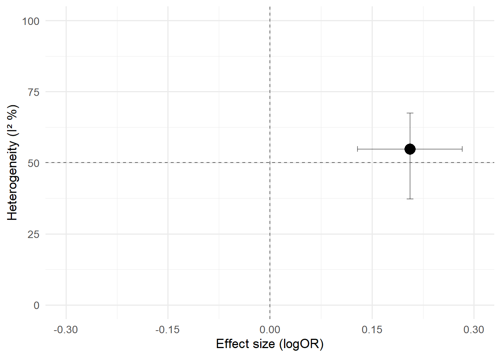

rm(list = ls())
pacman::p_load(tidyverse,
here,
kableExtra,
magrittr,
patchwork,
metafor,
metagear,
ape,
rotl,
orchaRd,
clubSandwich,
MuMIn,
ggsankey,
RColorBrewer,
scales,
glue,
ggrepel,
gghalves,
ggExtra,
cowplot
)Organochlorine Meta-Meta-Analysis
Packages & Data
Packages
Data
# Read the CSV files
data <- read_csv(here("data", "organochlorine_meta_meta_data.csv"))
study <- read_csv(here("data", "organochlorine_meta_meta_studies.csv"))
data <- left_join(data, study, by = "ma_aut_year")
data <- data %>%
mutate(ma_es_measure = recode(
ma_es_measure,
"? (regression coefficient) value" = "Beta (regression coefficient) value",
"beta (regression coefficient) value" = "Beta (regression coefficient) value",
"Adjusted ? (regression coefficient)" = "Beta (regression coefficient) value",
"adjusted coefficient regression (?)" = "Beta (regression coefficient) value",
"correlation coefficient (r)" = "Beta (regression coefficient) value",
"relative risk" = "Risk ratio",
"hazard ratio" = "Risk ratio",
"log Risk ratio" = "Risk ratio",
"OR (crude)" = "Odds ratio",
"OR (adjusted)" = "Odds ratio",
"RR (risk ratio)" = "Risk ratio",
"lnRR (risk ratio)" = "log Risk ratio",
"OR (odds ratio)" = "Odds ratio",
"aOR (adjusted odds ratio)" = "Odds ratio",
"fishers z" = "Fisher's Z",
"log OR (odds ratio)" = "log Odds ratio"))
# Table of the dataset
# kable(data, "html") %>%
# scroll_box(width = "250%", height = "400px")Polar plots
# ── 1. Shared palettes, labels, and theme ─────────────────────────────────────
# Blue gradient (light → dark)
blue_pal <- colorRampPalette(brewer.pal(9, "Blues"))(100)
greek_labs <- c(
"alpha-HCH" = expression(bold(alpha) * "-HCH"),
"beta-HCH" = expression(bold(beta) * "-HCH"),
"gamma-HCH" = expression(bold(gamma) * "-HCH"),
"trans-Nonachlor" = "trans-\nNonachlor"
)
# Minimal circular‑plot theme (re‑used by every plot)
base_circular_theme <- theme_minimal(base_size = 11) +
theme(
axis.text.x = element_text(colour = "grey12", size = 10),
axis.text.y = element_blank(),
panel.grid = element_blank(),
legend.position = "bottom",
legend.box.spacing = unit(-12, "pt"),
plot.title = element_text(size = 15, face = "bold", hjust = .5),
plot.subtitle = element_text(size = 12, hjust = .5),
plot.tag = element_text(face = "bold", size = 16),
plot.tag.position = c(0.02, 0.98),
text = element_text(colour = "grey12")
)
# ── 2. Self‑contained helper to build *and* save a circular bar plot ──────────
make_circular_plot <- function(
df, x_var, title,
legend_title = "Count",
collapse_under = 0,
greek = FALSE,
label_offset = 0.05,
file_name = NULL, # write “basename” here (no extension needed)
scale_max = NULL,
width = 18, # cm
height = 19, # cm
dpi = 300,
tag = NULL
) {
# 2·1 Count observations & optionally collapse rare categories ---------------
df_sum <- df %>%
count({{ x_var }}, name = "n") %>%
mutate({{ x_var }} := as.character({{ x_var }}),
{{ x_var }} := ifelse(collapse_under > 0 & n < collapse_under,
"Other", {{ x_var }})) %>%
group_by({{ x_var }}) %>%
summarise(n = sum(n), .groups = "drop") %>%
mutate(lbl = str_wrap({{ x_var }}, 5))
# 2·2 Plot basics ------------------------------------------------------------
max_val <- if (is.null(scale_max)) max(df_sum$n) else scale_max
p <- ggplot(df_sum, aes(x = reorder(lbl, n), y = n, fill = n)) +
geom_col(alpha = .95) +
geom_text(
data = dplyr::filter(df_sum, n > 1),
aes(y = n + max_val * label_offset, label = n),
size = 5, fontface = "bold"
) +
geom_segment(
aes(xend = after_stat(x), y = 0, yend = max_val),
linewidth = .15, colour = "grey25", linetype = "dashed"
) +
geom_hline(
data = tibble(y = max_val * seq(.25, 1, .25)),
aes(yintercept = y), colour = "grey80", linewidth = .3
) +
annotate(
"text",
x = Inf,
y = max_val * seq(.25, 1, .25),
label = number(max_val * seq(.25, 1, .25), accuracy = 1),
colour = "grey30", size = 3.5, fontface = "bold", hjust = -.1
) +
scale_fill_gradientn(
colours = blue_pal,
limits = c(0, max_val),
breaks = seq(0, max_val, length.out = 5),
labels = number_format(accuracy = 1),
name = legend_title,
guide = guide_colorsteps(barwidth = 14, barheight = .6,
title.position = "top", title.hjust = .5)
) +
coord_polar() +
labs(
title = title,
subtitle = glue("Total meta-analytic model estimates = {sum(df_sum$n)}"),
tag = tag,
x = NULL, y = NULL
) +
base_circular_theme
# 2·3 Optional Greek‑letter relabelling --------------------------------------
if (greek) {
p <- p + scale_x_discrete(labels = function(x) {
out <- x
need <- match(names(greek_labs), out, nomatch = 0L)
out[need] <- greek_labs[names(greek_labs) %in% out]
out
})
}
# 2·4 Save as high‑resolution PNG **and** PDF --------------------------------
if (!is.null(file_name)) {
if (!dir.exists("figures")) dir.create("figures")
base_name <- tools::file_path_sans_ext(file_name) # strip any ext
save_plot <- function(ext, device) {
ggsave(
filename = file.path("figures", paste0(base_name, ".", ext)),
plot = p,
width = width,
height = height,
dpi = dpi,
units = "cm",
bg = "white",
device = device
)
}
save_plot("png", "png") # raster version
save_plot("pdf", "pdf") # vector version
}
invisible(p)
}
# ── 3. Create example plots (replace `data` with your own dataframe) ─────────
# Assumes your data frame is called `data`
# A) Pesticide summary
pest_plot <- make_circular_plot(
df = data,
x_var = chemical_id,
title = "Summary of organochlorine pesticides",
legend_title = "Count",
collapse_under = 5,
greek = TRUE,
scale_max = 30,
label_offset = 0.07,
tag = "a)",
file_name = "pesticide_summary"
)
# B) Health‑outcome summary
health_plot <- make_circular_plot(
df = data,
x_var = health_outcome_group,
title = "Summary of adverse health outcomes",
legend_title = "Count",
scale_max = 40,
label_offset = 0.07,
tag = "b)",
file_name = "health_outcome_summary"
) +
theme(
legend.position = "bottom",
legend.box.margin = margin(t = 0.75, unit = "cm")
)
# C) Meta‑analytic effect‑size measures
es_plot <- make_circular_plot(
df = data,
x_var = ma_es_measure,
title = "Summary of meta‑analysis effect‑size measures",
legend_title = "Count",
scale_max = 80,
file_name = "ma_es_measure_summary"
)Effect size calculations & conversions
Log odds ratio
To address the issue of differing effect size metrics reported across the included meta-analyses, we developed a custom conversion function (convert_to_logOR()) that standardises all reported effect sizes to the log odds ratio (logOR) scale.
This function systematically converts various metrics—including odds ratios, standardised mean differences, risk ratios (with or without baseline risk adjustment), Fisher’s z values, and logistic regression coefficients—to logOR values, using established methodological approximations (e.g., Borenstein et al., 2021).
convert_to_logOR()
# ──────────────────────────────────────────────────────────────────────────────
# convert_to_logOR()
# → Standardises a point estimate and its CI to the log‑odds‑ratio (lnOR) scale
#
# Args
# ▸ effect_measure Character label of the metric reported (e.g. "Risk ratio")
# ▸ point_estimate Numeric point estimate
# ▸ ma_l_ci Numeric lower 95 %‑CI bound
# ▸ ma_u_ci Numeric upper 95 %‑CI bound
# ▸ baseline_risk Optional control‑group risk (probability) for RR→OR
#
# Returns
# ▸ A length‑3 numeric vector: c(lnOR, lnOR_LCI, lnOR_UCI)
# (If conversion is not implemented → c(NA, NA, NA).)
# ──────────────────────────────────────────────────────────────────────────────
convert_to_logOR <- function(effect_measure,
point_estimate,
ma_l_ci,
ma_u_ci,
baseline_risk = NA) {
## 0. Coerce inputs ---------------------------------------------------------
effect_measure <- as.character(effect_measure)
point_estimate <- suppressWarnings(as.numeric(point_estimate))
ma_l_ci <- suppressWarnings(as.numeric(ma_l_ci))
ma_u_ci <- suppressWarnings(as.numeric(ma_u_ci))
## 1. Odds ratio ------------------------------------------------------------
if (effect_measure %in% c("OR", "Odds ratio", "Odds Ratio")) {
return(c(log(point_estimate), log(ma_l_ci), log(ma_u_ci)))
## 2. log Odds ratio --------------------------------------------------------
} else if (effect_measure %in% c("log Odds ratio", "lnOR", "ln(OR)")) {
return(c(point_estimate, ma_l_ci, ma_u_ci))
## 3. Standardised mean difference (Hedges g, Cohen d) ---------------------
} else if (grepl("^SMD", effect_measure, ignore.case = TRUE)) {
# Uses logistic‐distribution approximation: lnOR ≈ SMD·π/√3
factor <- pi / sqrt(3)
return(c(point_estimate, ma_l_ci, ma_u_ci) * factor)
## 4. Risk ratio (raw) ------------------------------------------------------
} else if (effect_measure %in% c("RR", "Risk ratio", "Risk Ratio")) {
if (!is.na(baseline_risk)) {
# Zhang & Yu (1998) RR→OR correction for common baseline risk
OR <- point_estimate * (1 - baseline_risk) /
(1 - point_estimate * baseline_risk)
OR_l_ci <- ma_l_ci * (1 - baseline_risk) /
(1 - ma_l_ci * baseline_risk)
OR_u_ci <- ma_u_ci * (1 - baseline_risk) /
(1 - ma_u_ci * baseline_risk)
return(c(log(OR), log(OR_l_ci), log(OR_u_ci)))
} else {
# No baseline risk supplied → approximate lnOR with lnRR
return(c(log(point_estimate), log(ma_l_ci), log(ma_u_ci)))
}
## 5. log Risk ratio --------------------------------------------------------
} else if (effect_measure %in% c("log Risk ratio", "lnRR", "ln(RR)")) {
if (!is.na(baseline_risk)) {
RR <- exp(point_estimate)
RR_l_ci <- exp(ma_l_ci)
RR_u_ci <- exp(ma_u_ci)
OR <- RR * (1 - baseline_risk) /
(1 - RR * baseline_risk)
OR_l_ci <- RR_l_ci * (1 - baseline_risk) /
(1 - RR_l_ci * baseline_risk)
OR_u_ci <- RR_u_ci * (1 - baseline_risk) /
(1 - RR_u_ci * baseline_risk)
return(c(log(OR), log(OR_l_ci), log(OR_u_ci)))
} else {
# Treat lnRR as an acceptable proxy for lnOR
return(c(point_estimate, ma_l_ci, ma_u_ci))
}
## 6. Fisher's z (correlation) ---------------------------------------------
} else if (grepl("fishers?\\s*z", effect_measure, ignore.case = TRUE)) {
r <- tanh(point_estimate) # z → r
z_lci_r <- tanh(ma_l_ci)
z_uci_r <- tanh(ma_u_ci)
factor <- pi / sqrt(3) # r → lnOR
return(c(r, z_lci_r, z_uci_r) * factor)
## 7. Logistic regression β -------------------------------------------------
} else if (grepl("beta|coefficient", effect_measure, ignore.case = TRUE)) {
# If the coefficient is from a logistic model it is already lnOR
return(c(point_estimate, ma_l_ci, ma_u_ci))
## 8. Not implemented -------------------------------------------------------
} else {
warning("Effect‑measure conversion not implemented for: ", effect_measure)
return(rep(NA_real_, 3))
}
}
dat_quant <- data %>%
## ── 1. Convert every row to log(OR) + its CI ────────────────────────────
rowwise() %>%
mutate(converted = list(
convert_to_logOR(ma_es_measure,
ma_point_estimate,
ma_l_ci,
ma_u_ci) # baseline_risk defaults to NA
)) %>%
ungroup() %>%
## ── 2. Pull the numeric scalars out of the list column ──────────────────
mutate(
logOR = map_dbl(converted, 1), # first element
l_ci_logOR = map_dbl(converted, 2), # second element
u_ci_logOR = map_dbl(converted, 3) # third element
) %>%
## ── 3. Clean labels *and* compute the SE ────────────────────────────────
mutate(
ma_es_measure = recode(
ma_es_measure,
"OR" = "Odds ratio",
"RR" = "Risk ratio",
.default = ma_es_measure
),
se = (u_ci_logOR - l_ci_logOR) / (2 * 1.96) # 95 %‑CI → SE
) %>%
## ── 4. Drop helper column and keep successful rows ──────────────────────
# select(-converted) %>%
filter(!is.na(logOR))Checking for duplicate effect sizes
No duplicates were found (i.e., no duplicate point estimate, confidence intervals, chemical identity, and health outcome group)
dat_quant <- dat_quant %>%
filter(ma_aut_year != "yang_2020") %>% # one with linear regression
group_by(chemical_id, health_outcome_group) %>%
mutate(
duplicate_set = paste(chemical_id,
health_outcome_group,
ma_point_estimate,
ma_l_ci,
ma_u_ci)
) %>%
filter(!duplicated(duplicate_set)) %>%
select(-duplicate_set) %>%
ungroup()Testing the impact of the conversion strategy
mod_test <- rma.mv(yi = logOR,
V = se^2,
random = list(~1|ma_id,
~1|ma_e_id),
mods = ~ ma_es_measure - 1,
data = dat_quant)
summary(mod_test)
Multivariate Meta-Analysis Model (k = 126; method: REML)
logLik Deviance AIC BIC AICc
-13.5659 27.1318 39.1318 55.9560 39.8623
Variance Components:
estim sqrt nlvls fixed factor
sigma^2.1 0.0460 0.2145 37 no ma_id
sigma^2.2 0.0158 0.1255 126 no ma_e_id
Test for Residual Heterogeneity:
QE(df = 122) = 1212.8017, p-val < .0001
Test of Moderators (coefficients 1:4):
QM(df = 4) = 31.9106, p-val < .0001
Model Results:
estimate se zval
ma_es_measureBeta (regression coefficient) value 0.2018 0.0856 2.3587
ma_es_measurelog Risk ratio 0.2100 0.2532 0.8293
ma_es_measureOdds ratio 0.2572 0.0508 5.0619
ma_es_measureRisk ratio 0.0270 0.1414 0.1908
pval ci.lb ci.ub
ma_es_measureBeta (regression coefficient) value 0.0183 0.0341 0.3695 *
ma_es_measurelog Risk ratio 0.4070 -0.2863 0.7063
ma_es_measureOdds ratio <.0001 0.1576 0.3568 ***
ma_es_measureRisk ratio 0.8486 -0.2502 0.3042
---
Signif. codes: 0 '***' 0.001 '**' 0.01 '*' 0.05 '.' 0.1 ' ' 1# ── Orchard plot ───────────────────────────────────────────────────────────
orch_ma_es <- orchard_plot(
mod_test, # the metafor rma.mv object
mod = "ma_es_measure", # moderator to plot (matches mods = ~ ma_es_measure - 1)
group = "ma_id", # cluster/grouping variable for k labels
data = dat_quant, # original data frame
g = TRUE, # include the global (pooled) estimate
k.pos = "right", # show study counts on the right
xlab = "Log Odds Ratio",
trunk.size = 3, # size of the pooled effect symbol
branch.size = 1.2, twig.size = 0.9,
alpha = 0.5 # transparency of the raw points
) +
scale_fill_brewer(palette = "Dark2", guide = "none") + # Dark2 colours, no legend
theme_bw(base_size = 15) +
theme(
panel.grid = element_blank(),
plot.title = element_text(face = "bold"),
plot.margin = margin(10, 10, 10, 10)
)
# ggsave(here("figures","orchard_ma_es_measure.png"), orch_ma_es,
# width = 11, height = 5, dpi = 300, bg = "transparent")Confirms that there is no significant influence of the conversion strategy on effect size estimates
Log Odds ratio/SD relationship & distribution of log odds ratio estimates
# Create OR type label and back-transform to original odds ratio scale
dat_or <- dat_quant %>%
mutate(
OR_type = if_else(ma_es_measure %in% c("Odds ratio", "OR", "log Odds ratio", "log OR"),
"Original OR", "Converted OR"),
OR_value = exp(logOR)
)
accent_cols <- brewer.pal(8, "Blues")[c(2, 7)]
names(accent_cols) <- c("Converted OR", "Original OR")
or_hist_facet <- ggplot(dat_or, aes(x = OR_value, fill = OR_type)) +
geom_histogram(binwidth = 0.2, colour = "black", alpha = 0.7) +
scale_x_continuous(
trans = "log10",
breaks = c(0.25, 0.5, 1, 2, 4, 8),
labels = c("0.25", "0.5", "1", "2", "4", "8")
) +
scale_fill_manual(values = accent_cols, guide = "none") +
facet_wrap(~ OR_type, ncol = 1, scales = "free_y") +
labs(
title = "Distribution of Odds Ratios by Source",
x = "Log Odds Ratio",
y = "Frequency"
) +
theme_bw(base_size = 15) +
theme(
panel.grid.major.y = element_blank(),
plot.title = element_text(face = "bold", hjust = 0.5),
strip.text = element_text(face = "bold")
)
# ggsave(here("figures","ma_es_measure_dist.png"), or_hist_facet,
# width = 11, height = 8, dpi = 300, bg = "transparent")Creating & implementing the variance-covariance matrix
dat_quant <- dat_quant %>%
mutate(pair = paste0(health_outcome_group, chemical_id))
VCV <- impute_covariance_matrix(
vi = dat_quant$se^2,
cluster = dat_quant$pair,
r = 0.5
)lnH & it’s VCV
dat_H2 <- dat_quant %>%
filter(n_ps_e > 2) %>%
mutate(
heterogeneity = as.numeric(heterogeneity),
H2 = 1 / (1 - (heterogeneity / 100)),
lnH = log(sqrt(H2)),
k = n_ps_e,
Q = H2 * (k - 1),
SElnH = case_when(
Q > k ~ 0.5 * ((log(Q) - log(k - 1)) / (sqrt(2 * Q) - sqrt(2 * k - 3))),
TRUE ~ sqrt((1 / (2 * (k - 2))) * (1 - (1 / (3 * (k - 2))^2)))
), lnH_ci_lower = lnH - 1.96 * SElnH,
lnH_ci_upper = lnH + 1.96 * SElnH
) %>%
filter(!is.infinite(lnH), !is.na(lnH), !is.na(SElnH)) %>%
mutate(
H2 = exp(2 * lnH),
H2_lb = exp(2 * lnH_ci_lower),
H2_ub = exp(2 * lnH_ci_upper),
I2 = pmin(100, pmax(0, (H2 - 1) / H2 * 100)),
I2_ci_lower = pmin(100, pmax(0, (H2_lb - 1) / H2_lb * 100)),
I2_ci_upper = pmin(100, pmax(0, (H2_ub - 1) / H2_ub * 100)),
I2_se = (I2_ci_upper - I2_ci_lower) / (2 * 1.96)
) %>%
group_by(chemical_id) %>%
filter(n_distinct(ma_e_id) > 1) %>%
ungroup() %>%
mutate(chemical_id = droplevels(factor(chemical_id)))
VCV_H2 <- impute_covariance_matrix(
vi = dat_H2$SElnH^2,
cluster = dat_H2$pair,
r = 0.5
)Plot heterogeneity distributions (extracted vs back-transformed)
dist_df <- dat_H2 %>%
transmute(
`Heterogeneity (extracted)` = heterogeneity,
`Heterogeneity (back-transformed)` = I2
) %>%
pivot_longer(cols = everything(), names_to = "statistic", values_to = "value")
d2_cols <- brewer.pal(8, "Blues")[c(4, 7)]
names(d2_cols) <- c("Heterogeneity (extracted)", "Heterogeneity (back-transformed)")
het_plot <- ggplot(dist_df, aes(x = value, fill = statistic)) +
geom_histogram(bins = 30, colour = "black", alpha = 0.7) +
scale_fill_manual(values = d2_cols, guide = "none") +
facet_wrap(~ statistic, ncol = 1, scales = "free_y") +
labs(
title = "Distributions of Heterogeneity Metrics",
x = NULL,
y = "Frequency"
) +
theme_bw(base_size = 15) +
theme(
panel.grid.major.y = element_blank(),
panel.grid.minor = element_blank(),
plot.title = element_text(face = "bold", hjust = 0.5),
strip.text = element_text(face = "bold"),
plot.margin = margin(10, 10, 10, 10)
)
# ggsave(here("figures","ma_het_measure_dist.png"), het_plot, width = 11, height = 8, dpi = 300, bg = "transparent")Modelling overall effect on log odds ratio & heterogeneity
lnOR
mod_overall <- rma.mv(yi = logOR,
V = VCV,
random = list(~1|ma_id,
~1|ma_e_id),
data = dat_quant,
test = "t")
mod_overall <- robust(mod_overall, dat_quant$pair)
summary(mod_overall)
Multivariate Meta-Analysis Model (k = 126; method: REML)
logLik Deviance AIC BIC AICc
-15.1306 30.2613 36.2613 44.7462 36.4596
Variance Components:
estim sqrt nlvls fixed factor
sigma^2.1 0.0374 0.1935 37 no ma_id
sigma^2.2 0.0199 0.1410 126 no ma_e_id
Test for Heterogeneity:
Q(df = 125) = 1241.2037, p-val < .0001
Number of estimates: 126
Number of clusters: 46
Estimates per cluster: 1-8 (mean: 2.74, median: 2)
Model Results:
estimate se¹ tval¹ df¹ pval¹ ci.lb¹ ci.ub¹
0.2059 0.0383 5.3815 45 <.0001 0.1289 0.2830 ***
---
Signif. codes: 0 '***' 0.001 '**' 0.01 '*' 0.05 '.' 0.1 ' ' 1
1) results based on cluster-robust inference (var-cov estimator: CR1,
approx t-test and confidence interval, df: residual method)#Extracting data from the model
overall_results <- tibble(
lnOR = as.numeric(mod_overall$b),
lnOR_ci_lower = mod_overall$ci.lb,
lnOR_ci_upper = mod_overall$ci.ub,
lnOR_p_value = mod_overall$pval,
lnOR_tau2 = sum(mod_overall$sigma2)
)
i2_values <- i2_ml(mod_overall)
overall_plot_OR <- dat_quant %>%
mutate(
OR = exp(logOR),
OR_ci_lower = exp(l_ci_logOR),
OR_ci_upper = exp(u_ci_logOR)
)
overall_plot_OR$ma_e_id <- factor(
overall_plot_OR$ma_e_id
)
overall_value_OR <- data.frame(
OR = exp(mod_overall$b[1]),
ma_e_id = "Overall",
OR_ci_lower = exp(mod_overall$ci.lb),
OR_ci_upper = exp(mod_overall$ci.ub)
)lnH
mod_overall_H2 <- rma.mv(
yi = lnH,
V = VCV_H2,
random = list(~1|ma_id,
~1|ma_e_id),
data = dat_H2,
test = "t"
)
summary(mod_overall_H2)
Multivariate Meta-Analysis Model (k = 107; method: REML)
logLik Deviance AIC BIC AICc
-67.5737 135.1474 141.1474 149.1378 141.3827
Variance Components:
estim sqrt nlvls fixed factor
sigma^2.1 0.1065 0.3264 30 no ma_id
sigma^2.2 0.0971 0.3116 107 no ma_e_id
Test for Heterogeneity:
Q(df = 106) = 2050.8743, p-val < .0001
Model Results:
estimate se tval df pval ci.lb ci.ub
0.3969 0.0826 4.8042 106 <.0001 0.2331 0.5606 ***
---
Signif. codes: 0 '***' 0.001 '**' 0.01 '*' 0.05 '.' 0.1 ' ' 1i2_ml(mod_overall_H2) I2_Total I2_ma_id I2_ma_e_id
85.71055 44.83778 40.87276 #Extracting data from the model
overall_results_H2 <- tibble(
lnH = as.numeric(mod_overall_H2$b),
lnH_ci_lower = mod_overall_H2$ci.lb,
lnH_ci_upper = mod_overall_H2$ci.ub,
lnH_p_value = mod_overall_H2$pval
) %>%
mutate(
# 1) Compute H2 and its CIs
H2 = exp(2 * lnH),
H2_lb = exp(2 * lnH_ci_lower),
H2_ub = exp(2 * lnH_ci_upper),
# 2) Convert to I2 and truncate to [0,100]
I2 = pmin(100, pmax(0, (H2 - 1)/H2 * 100)),
I2_ci_lower = pmin(100, pmax(0, (H2_lb - 1)/H2_lb * 100)),
I2_ci_upper = pmin(100, pmax(0, (H2_ub - 1)/H2_ub * 100))
)
# Forest plot lnH
dat_H2$ma_e_id <- factor(dat_H2$ma_e_id)
dat_H2 <- dat_H2 %>%
mutate(
# 1) Compute H2 and its CIs
H2 = exp(2 * lnH),
H2_lb = exp(2 * lnH_ci_lower),
H2_ub = exp(2 * lnH_ci_upper),
# 2) Convert to I2 and truncate to [0,100]
I2 = pmin(100, pmax(0, (H2 - 1)/H2 * 100)),
I2_ci_lower = pmin(100, pmax(0, (H2_lb - 1)/H2_lb * 100)),
I2_ci_upper = pmin(100, pmax(0, (H2_ub - 1)/H2_ub * 100)),
I2_se = (I2_ci_upper - I2_ci_lower) / (2 * 1.96)
)
overall_value_I2 <- data.frame(
I2 = pmin(100, pmax(0, (exp(2 * mod_overall_H2$b[1]) - 1)/exp(2 * mod_overall_H2$b[1]) * 100)),
ma_e_id = "Overall",
I2_ci_lower = pmin(100, pmax(0, (exp(2 * mod_overall_H2$ci.lb) - 1)/exp(2 * mod_overall_H2$ci.lb) * 100)),
I2_ci_upper = pmin(100, pmax(0, (exp(2 * mod_overall_H2$ci.ub) - 1)/exp(2 * mod_overall_H2$ci.ub) * 100))
)
I2_text <- paste0("I² = ", round(overall_results_H2$I2, 1),
"% [", round(overall_results_H2$I2_ci_lower, 1),
"–", round(overall_results_H2$I2_ci_upper, 1), "%]")Overall orchard plots for lnOR and lnH
Forest plots for each individual primary meta-analytic estimate - with conversion to odds ratio and i2
fp_OR <- ggplot(overall_plot_OR, aes(x = OR, y = ma_e_id)) +
geom_point(shape = 18, size = 4) +
geom_errorbarh(aes(xmin = OR_ci_lower, xmax = OR_ci_upper), height = 0.2) +
geom_vline(xintercept = 1, linetype = "dashed", colour = "red") +
geom_point(data = overall_value_OR,
aes(x = OR, y = ma_e_id),
shape = 23, size = 4, fill = "red") +
geom_errorbarh(data = overall_value_OR,
aes(xmin = OR_ci_lower, xmax = OR_ci_upper, y = ma_e_id),
height = 0.3, size = 1) +
labs(x = "Odds Ratio (OR)",
y = "Meta-analytic estimate",
title = "Forest Plot of Odds Ratios") +
theme_minimal() +
theme(panel.grid.major.y = element_blank()) +
scale_y_discrete(limits = rev(c(levels(overall_plot_OR$ma_e_id), "Overall"))) +
scale_x_continuous( # auto-limits + 10 % padding
limits = {
rng <- range(c(overall_plot_OR$OR_ci_lower,
overall_plot_OR$OR_ci_upper,
overall_value_OR$OR_ci_lower,
overall_value_OR$OR_ci_upper),
na.rm = TRUE)
rng + c(-1, 1) * 0.10 * diff(rng)
})
fp_lnH <- ggplot(dat_H2, aes(x = I2, y = ma_e_id)) +
geom_point(shape = 18, size = 4) + # Point estimates
geom_errorbarh(aes(xmin = I2_ci_lower, xmax = I2_ci_upper),
height = 0.2) + # Confidence intervals
geom_vline(xintercept = 50, # Line at null effect
linetype = "dashed",
color = "red") +
geom_point(data = overall_value_I2,
aes(x = I2, y = ma_e_id),
shape = 23, size = 4, fill = "red") +
geom_errorbarh(data = overall_value_I2,
aes(xmin = I2_ci_lower, xmax = I2_ci_upper, y = ma_e_id),
height = 0.3, size = 1) +
labs(x = "I2",
y = "Meta-analytic estimates",
title = "Forest Plot of Heterogeneity") +
theme_minimal() +
theme(panel.grid.major.y = element_blank()) + # Cleaner horizontal lines
scale_y_discrete(limits = rev(c(levels(dat_H2$ma_e_id), "Overall")))
fp_combined <- fp_OR / fp_lnH + # plots top → bottom
plot_annotation(tag_levels = "A")galaxy plot
merged_overall_results <- bind_cols(overall_results, overall_results_H2)
ggplot(merged_overall_results, aes(x = lnOR, y = I2)) +
# Horizontal error bars (for lnOR)
geom_errorbarh(aes(xmin = lnOR_ci_lower, xmax = lnOR_ci_upper), height = 2, alpha = 0.5) +
# Vertical error bars (for I2)
geom_errorbar(aes(ymin = I2_ci_lower, ymax = I2_ci_upper), width = 0.01, alpha = 0.5) +
# Point
geom_point(size = 5) +
# Reference lines
geom_vline(xintercept = 0, linetype = "dashed", color = "grey40") +
geom_hline(yintercept = 50, linetype = "dashed", color = "grey40") +
# Axes
scale_x_continuous(limits = c(-0.3, 0.3), breaks = seq(-0.3, 0.3, by = 0.15)) +
scale_y_continuous(limits = c(0, 100), breaks = seq(0, 100, by = 25)) +
# Labels
labs(
x = "Effect size (logOR)",
y = "Heterogeneity (I\u00b2 %)"
) +
theme_minimal(base_size = 13)
# Prepare merged dataset for plotting (merge OR and I2 data by ma_e_id)
galaxy_data <- dat_quant %>%
mutate(
OR = exp(logOR),
OR_ci_lower = exp(l_ci_logOR),
OR_ci_upper = exp(u_ci_logOR)
) %>%
left_join(
dat_H2 %>% select(ma_e_id, I2, I2_ci_lower, I2_ci_upper, I2_se),
by = "ma_e_id"
) %>%
filter(!is.na(I2) & !is.na(OR))
# Prepare overall result
overall_point <- data.frame(
OR = overall_value_OR$OR,
OR_ci_lower = overall_value_OR$OR_ci_lower,
OR_ci_upper = overall_value_OR$OR_ci_upper,
I2 = overall_value_I2$I2,
I2_ci_lower = overall_value_I2$I2_ci_lower,
I2_ci_upper = overall_value_I2$I2_ci_upper,
ma_e_id = "Overall"
)
# Calculations for prediction intervals (logOR)
# Extract model components
mu <- as.numeric(mod_overall$b) # overall effect size (log OR)
se <- mod_overall$se # standard error
tau2 <- sum(mod_overall$sigma2) # total between-study variance
k <- length(mod_overall$yi) # number of effect sizes
df <- k - length(mod_overall$sigma2) # conservative degrees of freedom
# Calculations for prediction intervals (lnH)
# Extract model components
mu_H2 <- as.numeric(mod_overall_H2$b) # overall effect size (lnH)
se_H2 <- mod_overall_H2$se # standard error
tau2_H2 <- sum(mod_overall_H2$sigma2) # total between-study variance
k_H2 <- length(mod_overall_H2$yi) # number of effect sizes
df_H2 <- k_H2 - length(mod_overall_H2$sigma2) # conservative degrees of freedom
# Calculate t critical value
t_crit_H2 <- qt(0.975, df = df_H2)
# Prediction interval on log scale
pred_lower_H2 <- mu_H2 - t_crit_H2 * sqrt(tau2_H2 + se_H2^2)
pred_upper_H2 <- mu_H2 + t_crit_H2 * sqrt(tau2_H2 + se_H2^2)
# Convert to I-squared scale
pred_int_I2 <- data.frame(
I2_pred_lower = pmin(100, pmax(0, (exp(2 * pred_lower_H2[1]) - 1)/exp(2 * pred_lower_H2[1]) * 100)),
I2_pred_upper = pmin(100, pmax(0, (exp(2 * pred_upper_H2[1]) - 1)/exp(2 * pred_upper_H2[1]) * 100)),
I2 = pmin(100, pmax(0, (exp(2 * mu_H2[1]) - 1)/exp(2 * mu_H2[1]) * 100))
)
# Calculate t critical value
t_crit <- qt(0.975, df = df)
# Calculate prediction interval (on log scale)
pred_lower <- mu - t_crit * sqrt(tau2 + se^2)
pred_upper <- mu + t_crit * sqrt(tau2 + se^2)
# Convert to OR scale
pred_int <- data.frame(
OR_pred_lower = exp(pred_lower),
OR_pred_upper = exp(pred_upper),
OR = overall_point$OR
)## ── main plot ───────────────────────────────────────────────────────────
galaxy_plot <- ggplot(galaxy_data, aes(x = OR, y = I2, size = 1 / se)) +
## 1. individual studies (Blues 4)
geom_point(
shape = 21,
fill = "#2171B5", # Blues 4
colour = "#2171B5",
alpha = 0.6
) +
## 2. overall horizontal CI (OR) – black
geom_errorbarh(
data = overall_point,
aes(xmin = OR_ci_lower, xmax = OR_ci_upper),
height = 2,
size = 1.3,
colour = "black"
) +
## 5. overall vertical CI (I²) – black
geom_errorbar(
data = overall_point,
aes(ymin = I2_ci_lower, ymax = I2_ci_upper),
width = 0.03,
size = 1.3,
colour = "black"
) +
## 6. pooled effect point (diamond)
geom_point(
data = overall_point,
aes(x = OR, y = I2),
shape = 23,
size = 3,
fill = "firebrick",
colour = "black",
stroke = 1.2
) +
## 7. quadrant labels
annotate("text", x = 0, y = 85, label = "lack of association\nlow consistency", hjust = 0, size = 4.5) +
annotate("text", x = 1.55, y = 85, label = "positive association\nlow consistency", hjust = 0, size = 4.5) +
annotate("text", x = 1.55, y = 15, label = "positive association\nhigh consistency", hjust = 0, size = 4.5) +
annotate("text", x = 0, y = 15, label = "lack of association\nhigh consistency", hjust = 0, size = 4.5) +
## 8. reference lines
geom_vline(xintercept = 1, linetype = "dashed", colour = "firebrick") +
geom_vline(xintercept = 0.5, linetype = "dashed", colour = "grey40") +
geom_vline(xintercept = 1.5, linetype = "dashed", colour = "grey40") +
geom_hline(yintercept = 50, linetype = "dashed", colour = "grey40") +
geom_hline(yintercept = 25, linetype = "dashed", colour = "grey40") +
geom_hline(yintercept = 75, linetype = "dashed", colour = "grey40") +
## 9. axes & theme
scale_x_continuous(limits = c(0, 2), breaks = seq(0, 2, 0.5)) +
scale_y_continuous(limits = c(0, 100), breaks = seq(0, 100, 25)) +
scale_size(range = c(3, 12)) +
labs(
x = "Odds Ratio",
y = "Heterogeneity (I\u00b2 %)",
size = "Precision (1/SE):"
) +
theme_minimal(base_size = 13) +
theme(
legend.position = "bottom",
legend.text = element_text(size = 12),
panel.grid.major = element_blank(),
panel.grid.minor = element_blank(),
panel.border = element_rect(colour = "black", fill = NA, size = 0.8),
axis.title = element_text(size = 14),
axis.text = element_text(size = 12)
)
# Capture the plot returned by ggMarginal
galaxy_plot_out <- ggMarginal(
galaxy_plot,
type = "histogram",
fill = "#2171B5", # Blues 7
colour = "black"
)
# Save to figures
ggsave(
here::here("figures", "galaxy_plot.jpg"),
galaxy_plot_out,
width = 9, height = 7, dpi = 300
)Meta-regression: Organochlorine pesticides
Organochlorine pesticides odds ratio
# Get a list of chemicals
chemicals <- unique(dat_quant$chemical_id)
# Run separate meta-analyses for each chemical_id
results_list <- map_dfr(chemicals, function(chem) {
dat_sub <- dat_quant %>% filter(chemical_id == chem)
if (n_distinct(dat_sub$ma_e_id) > 1) { # Require at least 2 meta-analytic estimates
tryCatch({
# Calculate VCV matrix for this subset
VCV_sub <- impute_covariance_matrix(vi = dat_sub$se^2,
cluster = dat_sub$pair,
r = 0.5)
model <- rma.mv(yi = logOR,
V = VCV_sub,
random = list(~1|ma_id,
~1|ma_e_id),
test = "t",
sparse = TRUE,
data = dat_sub,
control = list(iter.max = 1000, rel.tol = 1e-8))
# Calculate heterogeneity statistics
# tau2_raw <- sum(model$sigma2)
# sigma2_v <- sum(1 / model$vi) * (model$k - 1) / (sum(1 / model$vi)^2 - sum((1 / model$vi)^2))
# I2_raw <- 100 * (tau2_raw / (tau2_raw + sigma2_v))
# CV_raw <- sqrt(tau2_raw) / abs(model$b[1,1])
tibble(
chemical_id = chem,
logOR = model$b[1,1],
ci.lb = model$ci.lb,
ci.ub = model$ci.ub,
pval = model$pval,
# tau2 = tau2_raw,
# I2 = I2_raw,
# CV = CV_raw,
k = nrow(dat_sub),
n = n_distinct(dat_sub$ma_id)
)
}, error = function(e) {
tibble(chemical_id = chem, logOR = NA, ci.lb = NA, ci.ub = NA, pval = NA,
#tau2 = NA, I2 = NA, CV = NA,
k = nrow(dat_sub), n = n_distinct(dat_sub$ma_id))
})
} else {
tibble(chemical_id = chem, logOR = NA, ci.lb = NA, ci.ub = NA, pval = NA,
#tau2 = NA, I2 = NA, CV = NA,
k = nrow(dat_sub), n = n_distinct(dat_sub$ma_id))
}
})Organochlorine pesticides odds ratio plot
plot_data_chemical <- results_list %>%
filter(!is.na(logOR)) %>%
arrange(logOR) %>%
filter(chemical_id != "heptachlor epoxide") %>%
mutate(
OR = exp(logOR),
OR_ci_lower = exp(ci.lb),
OR_ci_upper = exp(ci.ub)
)
forest_plot_chemical <- ggplot(plot_data_chemical, aes(y = reorder(chemical_id, OR), x = OR)) +
geom_point(aes(size = k),
color = ifelse(plot_data_chemical$pval > 0.05, "grey", "black"),
alpha = 1) +
scale_size(range = c(5, 13)) +
geom_errorbarh(aes(xmin = OR_ci_lower , xmax = OR_ci_upper),
height = 0.2,
alpha = ifelse(plot_data_chemical$pval > 0.05, 0.6, 1)) +
geom_vline(xintercept = 1, linetype = "dashed", color = "red") +
geom_text(aes(label = paste0("k = ", k, " (", n, ")"), x = min(OR_ci_lower , na.rm = TRUE) - 0.5),
hjust = 0, size = 5,
fontface = ifelse(plot_data_chemical$pval < 0.05, "bold", "plain")) +
xlab("odds ratio") +
ylab("organochlorine pesticide") +
theme_minimal() +
theme(legend.position = "none",
panel.border = element_rect(colour = "black", fill = NA, size = 1),
plot.title = element_text(face = "bold", size = 16),
legend.title = element_text(size = 14),
legend.text = element_text(size = 13),
axis.title.x = element_text(size = 16),
axis.title.y = element_text(size = 16),
axis.text.y = element_text(size = 15),
axis.text.x = element_text(size = 15))
#ggsave(here("figures","forest_plot_chemical.png"), forest_plot_chemical,
# width = 11, height = 8, dpi = 300, bg = "transparent")Organochlorine pesticides heterogeneity
# Run separate meta-analyses for each chemical_id
results_list2 <- map_dfr(chemicals, function(chem) {
dat_sub <- dat_H2 %>% filter(chemical_id == chem)
if (n_distinct(dat_sub$ma_e_id) > 1) { # Require at least 2 meta-analytic estimates
tryCatch({
# Calculate VCV matrix for this subset
VCV_sub <- impute_covariance_matrix(vi = dat_sub$se^2,
cluster = dat_sub$pair,
r = 0.5)
model <- rma.mv(yi = lnH,
V = VCV_sub,
random = list(~1|ma_id,
~1|ma_e_id),
test = "t",
sparse = TRUE,
data = dat_sub,
control = list(iter.max = 1000, rel.tol = 1e-8))
# Calculate heterogeneity statistics
# tau2_raw <- sum(model$sigma2)
# sigma2_v <- sum(1 / model$vi) * (model$k - 1) / (sum(1 / model$vi)^2 - sum((1 / model$vi)^2))
# I2_raw <- 100 * (tau2_raw / (tau2_raw + sigma2_v))
# CV_raw <- sqrt(tau2_raw) / abs(model$b[1,1])
tibble(
chemical_id = chem,
lnH = model$b[1,1],
ci.lb = model$ci.lb,
ci.ub = model$ci.ub,
pval = model$pval,
# tau2 = tau2_raw,
# I2 = I2_raw,
# CV = CV_raw,
k = nrow(dat_sub),
n = n_distinct(dat_sub$ma_id)
)
}, error = function(e) {
tibble(chemical_id = chem, lnH = NA, ci.lb = NA, ci.ub = NA, pval = NA,
#tau2 = NA, I2 = NA, CV = NA,
k = nrow(dat_sub), n = n_distinct(dat_sub$ma_id))
})
} else {
tibble(chemical_id = chem, lnH = NA, ci.lb = NA, ci.ub = NA, pval = NA,
#tau2 = NA, I2 = NA, CV = NA,
k = nrow(dat_sub), n = n_distinct(dat_sub$ma_id))
}
})Organochlorine pesticides lnH plot
plot_data_chemical_H2 <- results_list2 %>%
filter(!is.na(lnH)) %>%
mutate(chemical_id = factor(chemical_id)) %>%
mutate(
# 1) Compute H2 and its CIs
H2 = exp(2 * lnH),
H2_lb = exp(2 * ci.lb),
H2_ub = exp(2 * ci.ub),
# 2) Convert to I2 and truncate to [0,100]
I2 = pmin(100, pmax(0, (H2 - 1)/H2 * 100)),
I2_ci_lower = pmin(100, pmax(0, (H2_lb - 1)/H2_lb * 100)),
I2_ci_upper = pmin(100, pmax(0, (H2_ub - 1)/H2_ub * 100))
)
plot_data_chemical_merged <- left_join(plot_data_chemical, plot_data_chemical_H2 %>%
select(chemical_id, I2, I2_ci_lower, I2_ci_upper),
by = "chemical_id") %>%
mutate(
OR = exp(logOR),
OR_ci_lower = exp(ci.lb),
OR_ci_upper = exp(ci.ub)
)
plot_data_chemical_lnH <- results_list2 %>%
filter(!is.na(lnH)) %>%
mutate(chemical_id = factor(chemical_id))
forest_plot_chemical_lnH <- ggplot(plot_data_chemical_H2, aes(y = reorder(chemical_id, lnH), x = lnH)) +
geom_point(aes(size = k),
color = ifelse(plot_data_chemical_H2$pval > 0.05, "grey", "black"),
alpha = 1) +
scale_size(range = c(5, 13)) +
geom_errorbarh(aes(xmin = ci.lb, xmax = ci.ub),
height = 0.2,
alpha = ifelse(plot_data_chemical_H2$pval > 0.05, 0.6, 1)) +
geom_vline(xintercept = 0, linetype = "dashed", color = "red") +
geom_text(aes(label = paste0("k = ", k, " (", n, ")"), x = min(ci.lb, na.rm = TRUE) - 0.5),
hjust = 0, size = 5,
fontface = ifelse(plot_data_chemical_H2$pval < 0.05, "bold", "plain")) +
xlab("lnH") +
ylab("organochlorine pesticide") +
theme_minimal() +
theme(legend.position = "none",
panel.border = element_rect(colour = "black", fill = NA, size = 1),
plot.title = element_text(face = "bold", size = 16),
legend.title = element_text(size = 14),
legend.text = element_text(size = 13),
axis.title.x = element_text(size = 16),
axis.title.y = element_text(size = 16),
axis.text.y = element_text(size = 15),
axis.text.x = element_text(size = 15))
# ggsave(here("figures","forest_plot_chemical_lnH.png"), forest_plot_chemical_lnH,
# width = 11, height = 8, dpi = 300, bg = "transparent")galaxy plot organochlorine pesticide
# ── 0. Data with numeric IDs ──────────────────────────────────────────────
plot_data_chemical_merged <- plot_data_chemical_merged %>%
arrange(OR) %>%
mutate(label_id = row_number())
# ── 1. Plot without legends ───────────────────────────────────────────────
galaxy_chemicals <- ggplot(
plot_data_chemical_merged,
aes(
x = OR,
y = I2,
size = k,
fill = pval < 0.05
)
) +
## Points with black outline
geom_point(shape = 21, colour = "black", stroke = 0.3, alpha = 0.70) +
## Numeric labels
geom_text_repel(
aes(label = label_id),
colour = "black",
segment.color = "black",
size = 5,
box.padding = 1,
max.overlaps = Inf
) +
## Reference lines & quadrant text (unchanged) )---------------------------
geom_vline(xintercept = 1, linetype = "dashed", colour = "firebrick") +
geom_hline(yintercept = 50, linetype = "dashed", colour = "grey40") +
geom_hline(yintercept = 25, linetype = "dashed", colour = "grey40") +
geom_hline(yintercept = 75, linetype = "dashed", colour = "grey40") +
annotate("text", x = 0.05, y = 85,
label = "lack of association\nlow consistency",
hjust = 0, size = 4.2) +
annotate("text", x = 1.55, y = 85,
label = "positive association\nlow consistency",
hjust = 0, size = 4.2) +
annotate("text", x = 1.55, y = 15,
label = "positive association\nhigh consistency",
hjust = 0, size = 4.2) +
annotate("text", x = 0.05, y = 15,
label = "lack of association\nhigh consistency",
hjust = 0, size = 4.2) +
## Scales (still needed for colours/sizes, but silent) -------------------
scale_fill_manual(values = c("grey60", "#2171B5"), guide = "none") +
scale_size(range = c(4, 10), guide = "none") +
scale_x_continuous(limits = c(0, 2), breaks = seq(0, 2, 0.5)) +
scale_y_continuous(limits = c(0, 100), breaks = seq(0, 100, 25)) +
labs(
x = "Odds ratio",
y = "Heterogeneity (I², %)",
caption = "blue = significant (p < 0.05), grey = non-significant | bubble area = k"
) +
## Theme tweaks ----------------------------------------------------------
theme_minimal(base_size = 13) +
theme(
panel.grid = element_blank(),
panel.border = element_rect(colour = "black", fill = NA, size = 0.6),
axis.text = element_text(size = 12),
legend.position = "none", # <-- kills every legend
plot.caption = element_text(size = 8, hjust = 1, vjust = 0)
)
# ── 3. Save figure ──────────────────────────────────────────────────────────────
#ggsave(
# here::here("figures", "galaxy_plot_chemical.jpg"),
# galaxy_chemicals,
# width = 8, height = 5, dpi = 300
#)Meta-regression: Adverse Health Outcomes
Adverse health outcome odds ratio
dat_quant$health_outcome_group <- as.factor(dat_quant$health_outcome_group)
dat_quant <- dat_quant %>%
mutate(health_outcome_group = recode(
health_outcome_group,
"Endocrine, nutritional or metabolic diseases" = "Endocrine diseases",
"Diseases of the circulatory system" = "Diseases of the\ncirculatory system",
"Pregnancy, childbirth or the puerperium" = "Pregnancy or\nchildbirth",
"Conditions originating in the perinatal period" = "Perinatal period",
"Mental, behavioural or neurodevelopmental disorders" = "Neurodevelopmental\ndisorders",
"Diseases of the musculoskeletal system or connective tissue" = "Diseases of the\nmusculoskeletal system",
"Symptoms, signs or clinical findings, not elsewhere classified" = "Symptoms not\nelsewhere classified",
"Diseases of the respiratory system" = "Diseases of the\nrespiratory system",
"Diseases of the genitourinary system" = "Diseases of the\ngenitourinary system"
))
# Get a list of outcome groups
outcomes <- unique(dat_quant$health_outcome_group)
# Loop over each health outcome group
results_health <- map_dfr(outcomes, function(outcome) {
dat_sub <- dat_quant %>% filter(health_outcome_group == outcome)
if (n_distinct(dat_sub$ma_e_id) > 1) { # requires at least 2 meta-analytic estimates
tryCatch({
VCV_sub <- impute_covariance_matrix(vi = dat_sub$se^2,
cluster = dat_sub$pair,
r = 0.5)
model <- rma.mv(yi = logOR,
V = se^2,
random = list(~1|ma_id,
~1|ma_e_id),
test = "t",
sparse = TRUE,
data = dat_sub,
control = list(iter.max = 1000, rel.tol = 1e-8))
# Calculate heterogeneity statistics
# tau2_raw <- sum(model$sigma2)
# sigma2_v <- sum(1 / model$vi) * (model$k - 1) / (sum(1 / model$vi)^2 - sum((1 / model$vi)^2))
# I2_raw <- 100 * (tau2_raw / (tau2_raw + sigma2_v))
# CV_raw <- sqrt(tau2_raw) / abs(model$b[1,1])
tibble(
health_outcome_group = outcome,
logOR = model$b[1,1],
ci.lb = model$ci.lb,
ci.ub = model$ci.ub,
pval = model$pval,
# tau2 = tau2_raw,
# I2 = I2_raw,
# CV = CV_raw,
k = nrow(dat_sub),
n = n_distinct(dat_sub$ma_id)
)
}, error = function(e) {
tibble(health_outcome_group = outcome, logOR = NA, ci.lb = NA, ci.ub = NA, pval = NA,
#tau2 = NA, I2 = NA, CV = NA,
k = nrow(dat_sub), n = n_distinct(dat_sub$ma_id))
})
} else {
tibble(health_outcome_group = outcome, logOR = NA, ci.lb = NA, ci.ub = NA, pval = NA,
#tau2 = NA, I2 = NA, CV = NA,
k = nrow(dat_sub), n = n_distinct(dat_sub$ma_id))
}
})Adverse health outcome odds ratio plot
plot_data_health <- results_health %>%
filter(!is.na(logOR)) %>%
arrange(logOR) %>%
mutate(
OR = exp(logOR),
OR_ci_lower = exp(ci.lb),
OR_ci_upper = exp(ci.ub)
)
forest_plot_health <- ggplot(plot_data_health, aes(y = reorder(health_outcome_group, OR), x = OR)) +
geom_point(aes(size = k),
color = ifelse(plot_data_health$pval > 0.05, "grey", "black"),
alpha = 1) +
scale_size(range = c(5, 13)) +
geom_errorbarh(aes(xmin = OR_ci_lower , xmax = OR_ci_upper),
height = 0.2,
alpha = ifelse(plot_data_health$pval > 0.05, 0.6, 1)) +
geom_vline(xintercept = 1, linetype = "dashed", color = "red") +
geom_text(aes(label = paste0("k = ", k, " (", n, ")"), x = min(OR_ci_lower, na.rm = TRUE) - 0.5),
hjust = 0, size = 5,
fontface = ifelse(plot_data_health$pval < 0.05, "bold", "plain")) +
xlab("odds ratio") +
ylab("Adverse Health Outcome") +
theme_minimal() +
theme(legend.position = "none",
panel.border = element_rect(colour = "black", fill = NA, size = 1),
plot.title = element_text(face = "bold", size = 16),
legend.title = element_text(size = 14),
legend.text = element_text(size = 13),
axis.title.x = element_text(size = 16),
axis.title.y = element_text(size = 16),
axis.text.y = element_text(size = 15),
axis.text.x = element_text(size = 15))
# ggsave(here("figures","forest_plot_health.png"), forest_plot_health,
# width = 12, height = 6, dpi = 300, bg = "transparent")Adverse health outcome lnH
dat_H2 <- dat_H2 %>%
mutate(health_outcome_group = recode(
health_outcome_group,
"Endocrine, nutritional or metabolic diseases" = "Endocrine diseases",
"Diseases of the circulatory system" = "Diseases of the\ncirculatory system",
"Pregnancy, childbirth or the puerperium" = "Pregnancy or\nchildbirth",
"Conditions originating in the perinatal period" = "Perinatal period",
"Mental, behavioural or neurodevelopmental disorders" = "Neurodevelopmental\ndisorders",
"Diseases of the musculoskeletal system or connective tissue" = "Diseases of the\nmusculoskeletal system",
"Symptoms, signs or clinical findings, not elsewhere classified" = "Symptoms not\nelsewhere classified",
"Diseases of the respiratory system" = "Diseases of the\nrespiratory system",
"Diseases of the genitourinary system" = "Diseases of the\ngenitourinary system"
))
# Get a list of outcome groups
outcomes <- unique(dat_H2$health_outcome_group)
# Loop over each health outcome group
results_health_H2 <- map_dfr(outcomes, function(outcome) {
dat_sub <- dat_H2 %>% filter(health_outcome_group == outcome)
if (n_distinct(dat_sub$ma_e_id) > 1) { # requires at least 2 meta-analytic estimates
tryCatch({
VCV_sub <- impute_covariance_matrix(vi = dat_sub$se^2,
cluster = dat_sub$pair,
r = 0.5)
model <- rma.mv(yi = lnH,
V = VCV_sub,
random = list(~1|ma_id,
~1|ma_e_id),
test = "t",
sparse = TRUE,
data = dat_sub,
control = list(iter.max = 1000, rel.tol = 1e-8))
# Calculate heterogeneity statistics
# tau2_raw <- sum(model$sigma2)
# sigma2_v <- sum(1 / model$vi) * (model$k - 1) / (sum(1 / model$vi)^2 - sum((1 / model$vi)^2))
# I2_raw <- 100 * (tau2_raw / (tau2_raw + sigma2_v))
# CV_raw <- sqrt(tau2_raw) / abs(model$b[1,1])
tibble(
health_outcome_group = outcome,
lnH = model$b[1,1],
ci.lb = model$ci.lb,
ci.ub = model$ci.ub,
pval = model$pval,
# tau2 = tau2_raw,
# I2 = I2_raw,
# CV = CV_raw,
k = nrow(dat_sub),
n = n_distinct(dat_sub$ma_id)
)
}, error = function(e) {
tibble(health_outcome_group = outcome, lnH = NA, ci.lb = NA, ci.ub = NA, pval = NA,
#tau2 = NA, I2 = NA, CV = NA,
k = nrow(dat_sub), n = n_distinct(dat_sub$ma_id))
})
} else {
tibble(health_outcome_group = outcome, lnH = NA, ci.lb = NA, ci.ub = NA, pval = NA,
#tau2 = NA, I2 = NA, CV = NA,
k = nrow(dat_sub), n = n_distinct(dat_sub$ma_id))
}
})Adverse health outcome lnH plot
plot_data_health_H2 <- results_health_H2 %>%
filter(!is.na(lnH)) %>%
mutate(health_outcome_group = factor(health_outcome_group)) %>%
mutate(
# 1) Compute H2 and its CIs
H2 = exp(2 * lnH),
H2_lb = exp(2 * ci.lb),
H2_ub = exp(2 * ci.ub),
# 2) Convert to I2 and truncate to [0,100]
I2 = pmin(100, pmax(0, (H2 - 1)/H2 * 100)),
I2_ci_lower = pmin(100, pmax(0, (H2_lb - 1)/H2_lb * 100)),
I2_ci_upper = pmin(100, pmax(0, (H2_ub - 1)/H2_ub * 100))
)
plot_data_health_merged <- left_join(plot_data_health, plot_data_health_H2 %>%
select(health_outcome_group, I2, I2_ci_lower, I2_ci_upper),
by = "health_outcome_group") %>%
mutate(
OR = exp(logOR),
OR_ci_lower = exp(ci.lb),
OR_ci_upper = exp(ci.ub)
)
forest_plot_lnH_health <- ggplot(plot_data_health_H2, aes(y = reorder(health_outcome_group, lnH), x = lnH)) +
geom_point(aes(size = k),
color = ifelse(plot_data_health_H2$pval > 0.05, "grey", "black"),
alpha = 1) +
scale_size(range = c(5, 13)) +
geom_errorbarh(aes(xmin = ci.lb, xmax = ci.ub),
height = 0.2,
alpha = ifelse(plot_data_health_H2$pval > 0.05, 0.6, 1)) +
geom_vline(xintercept = 0, linetype = "dashed", color = "red") +
geom_text(aes(label = paste0("k = ", k, " (", n, ")"), x = min(ci.lb, na.rm = TRUE) - 0.5),
hjust = 0, size = 5,
fontface = ifelse(plot_data_health_H2$pval < 0.05, "bold", "plain")) +
xlab("lnH") +
ylab("Health Outcome") +
theme_minimal() +
theme(legend.position = "none",
panel.border = element_rect(colour = "black", fill = NA, size = 1),
plot.title = element_text(face = "bold", size = 16),
legend.title = element_text(size = 14),
legend.text = element_text(size = 13),
axis.title.x = element_text(size = 16),
axis.title.y = element_text(size = 16),
axis.text.y = element_text(size = 15),
axis.text.x = element_text(size = 15))
# ggsave(here("figures","forest_plot_lnH_health.png"), forest_plot_lnH_health,
# width = 12, height = 6, dpi = 300, bg = "transparent")galaxy plot adverse health outcome
# ── 0. Data with numeric IDs ──────────────────────────────────────────────
plot_data_health_merged <- plot_data_health_merged %>%
arrange(OR) %>%
mutate(label_id = row_number())
galaxy_health <- ggplot(plot_data_health_merged, aes(
x = OR,
y = I2,
size = k,
fill = pval < 0.05
)
) +
## Points with black outline
geom_point(shape = 21, colour = "black", stroke = 0.3, alpha = 0.70) +
## Numeric labels
geom_text_repel(
aes(label = label_id),
colour = "black",
segment.color = "black",
size = 5,
box.padding = 1,
max.overlaps = Inf
) +
## Reference lines & quadrant text (unchanged) ---------------------------
geom_vline(xintercept = 1, linetype = "dashed", colour = "firebrick") +
geom_hline(yintercept = 50, linetype = "dashed", colour = "grey40") +
geom_hline(yintercept = 25, linetype = "dashed", colour = "grey40") +
geom_hline(yintercept = 75, linetype = "dashed", colour = "grey40") +
annotate("text", x = 0.05, y = 85,
label = "lack of association\nlow consistency",
hjust = 0, size = 4.2) +
annotate("text", x = 1.55, y = 85,
label = "positive association\nlow consistency",
hjust = 0, size = 4.2) +
annotate("text", x = 1.55, y = 15,
label = "positive association\nhigh consistency",
hjust = 0, size = 4.2) +
annotate("text", x = 0.05, y = 15,
label = "lack of association\nhigh consistency",
hjust = 0, size = 4.2) +
## Scales (still needed for colours/sizes, but silent) -------------------
scale_fill_manual(values = c("grey60", "#2171B5"), guide = "none") +
scale_size(range = c(4, 10), guide = "none") +
scale_x_continuous(limits = c(0, 2), breaks = seq(0, 2, 0.5)) +
scale_y_continuous(limits = c(0, 100), breaks = seq(0, 100, 25)) +
labs(
x = "Odds ratio",
y = "Heterogeneity (I², %)",
caption = "blue = significant (p < 0.05), grey = non-significant | bubble area = k"
) +
## Theme tweaks ----------------------------------------------------------
theme_minimal(base_size = 13) +
theme(
panel.grid = element_blank(),
panel.border = element_rect(colour = "black", fill = NA, size = 0.6),
axis.text = element_text(size = 12),
legend.position = "none", # <-- kills every legend
plot.caption = element_text(size = 8, hjust = 1, vjust = 0)
)
# ── 3. Save figure ──────────────────────────────────────────────────────────────
#ggsave(
# here::here("figures", "galaxy_health.png"),
# galaxy_chemicals,
# width = 8, height = 5, dpi = 300
#)Sensitivity Analysis
CEESAT
CEESAT plot
# Start the data manipulation
percent_ceesat_score <- study %>%
filter(!ma_aut_year %in% c("brown_2006", "yang_2020", "adami_1995")) %>% # drop the three missing IDs
select(studies = ma_aut_year, starts_with("CEE")) %>%
na.omit() %>%
pivot_longer(cols = -studies, names_to = "question", values_to = "score") %>%
group_by(question, score) %>%
summarise(n = n(), .groups = "drop") %>%
mutate(
percent = 100 * n / sum(n),
across(c(question, score), as.factor),
question = fct_recode(
question,
`1.1 Are the elements of the review question clear?` = "CEESAT2_1.1",
`2.1 Is there an a-priori method protocol document?` = "CEESAT2_2.1",
`3.1. Is the approach to searching clearly defined systematic and\ntransparent?` = "CEESAT2_3.1",
`3.2. Is the search comprehensive?` = "CEESAT2_3.2",
`4.1. Are eligibility criteria clearly defined?` = "CEESAT2_4.1",
`4.2. Are eligibility criteria consistently applied to all potentially relevant\narticles and studies found during the search?` = "CEESAT2_4.2",
`4.3. Are eligibility decisions transparently reported?` = "CEESAT2_4.3",
`5.1. Does the review critically appraise each study?` = "CEESAT2_5.1",
`5.2. During critical appraisal was an effort made to minimise\nsubjectivity?` = "CEESAT2_5.2",
`6.1. Is the method of data extraction fully documented?` = "CEESAT2_6.1",
`6.2. Are the extracted data reported for each study?` = "CEESAT2_6.2",
`6.3. Were extracted data cross-checked by more than one reviewer?` = "CEESAT2_6.3",
`7.1. Is the choice of synthesis approach appropriate?` = "CEESAT2_7.1",
`7.2. Is a statistical estimate of pooled effect provided together with\nmeasure of variance and heterogeneity among studies?` = "CEESAT2_7.2",
`7.3 Is variability in the study findings investigated and discussed?` = "CEESAT2_7.3",
`8.1 Have the authors considered limitations in the synthesis?` = "CEESAT2_8.1"
),
question = factor(question, levels = rev(levels(question))),
score = factor(score, levels = levels(score)[c(4, 1, 3, 2)])
)
# Create CEESAT plot
ceesat_figure <- ggplot(data = percent_ceesat_score, aes(x = question, y = percent, fill = score)) +
geom_col(width = 0.7, position = "fill", color = "black") +
geom_text(aes(label = n), position = position_fill(vjust = 0.5), size = 7, fontface = "bold") +
coord_flip() +
guides(fill = guide_legend(reverse = TRUE)) +
scale_fill_manual(values = c("#FF0000","#FFD700","#008000", "#DAA520"), name = "Score:") +
scale_y_continuous(labels = scales::percent) +
theme(panel.grid.major = element_blank(),
panel.grid.minor = element_blank(),
panel.background = element_blank(),
axis.text.y = element_text(size = 20),
axis.text.x = element_text(size = 20),
axis.title.x = element_text(size = 25),
axis.title.y = element_text(size = 25),
legend.position = "top",
legend.justification = "left",
legend.direction = "horizontal",
legend.box = "horizontal",
legend.box.just = "left",
legend.title.align = 0.5,
legend.key.size = unit(1, "cm"),
legend.title = element_text(size =25),
legend.text = element_text(size = 25),
strip.text = element_text(size = 20),
strip.background = element_blank(),
plot.tag = element_text(size = 25)) +
ylab("Percentage") +
xlab("CEESAT Question")
total_n <- sum(percent_ceesat_score$n)
percentages <- tibble(
red_percentage = sum(percent_ceesat_score$n[percent_ceesat_score$score == "red"]) / total_n * 100,
amber_percentage = sum(percent_ceesat_score$n[percent_ceesat_score$score == "amber"]) / total_n * 100,
green_percentage = sum(percent_ceesat_score$n[percent_ceesat_score$score == "green"]) / total_n * 100,
gold_percentage = sum(percent_ceesat_score$n[percent_ceesat_score$score == "gold"]) / total_n * 100
)
# ggsave(here("figures", "ceesat_figure.jpg"),ceesat_figure, width = 25, height = 15, units = "cm", scale = 2, dpi = 300)Leave red out odds ratio
# ── USER SETTINGS -----------------------------------------------------------
effect_col <- "logOR" # ← change to "lnRR", "lnH", …
variance_col <- "se" # ← matching SE column (e.g. "lnRR_se")
y_axis_label <- "Overall log Odds Ratio"
corr_r <- 0.50 # assumed correlation (for VCV imputation)
# ── Identify all CEESAT columns --------------------------------------------
ceesat_cols <- grep("^CEESAT2_", names(dat_quant), value = TRUE)
# ── Helpers & storage -------------------------------------------------------
is_rma <- function(x) inherits(x, c("rma", "rma.mv", "robust.rma"))
ceesat_models <- ceesat_VCV <- vector("list", length(ceesat_cols))
n_study_vec <- integer(length(ceesat_cols))
# ── MAIN LOOP — fit one model per CEESAT item -------------------------------
for (i in seq_along(ceesat_cols)) {
col_i <- ceesat_cols[i]
# Drop RED-scored rows
data_i <- dat_quant %>%
filter(!is.na(.data[[col_i]]),
tolower(.data[[col_i]]) != "red") %>%
mutate(pair = paste0(health_outcome_group, chemical_id))
n_study_vec[i] <- nrow(data_i)
# Skip if < 2 rows
if (nrow(data_i) < 2) {
ceesat_models[[i]] <- ceesat_VCV[[i]] <- NULL
next
}
# Impute VCV
vcv <- impute_covariance_matrix(
vi = (data_i[[variance_col]])^2,
cluster = data_i$pair,
r = corr_r
)
if (is.list(vcv)) vcv <- vcv[[1]]
ceesat_VCV[[i]] <- vcv <- as.matrix(vcv)
# Multilevel model + robust SEs
ceesat_models[[i]] <- rma.mv(
yi = data_i[[effect_col]],
V = vcv,
random = list(~1 | ma_id,
~1 | ma_e_id),
test = "t",
data = data_i
) %>% robust(data_i$pair)
}
# ── Tidy model results ------------------------------------------------------
results_ceesat <- map2_dfr(ceesat_cols, seq_along(ceesat_cols), \(col, idx) {
mod <- ceesat_models[[idx]]
if (!is_rma(mod)) {
tibble(
CEESAT_item = col,
logOR = NA_real_, SE = NA_real_, tval = NA_real_,
pval = NA_real_, ci.lb = NA_real_, ci.ub = NA_real_,
n_effects = n_study_vec[idx]
)
} else {
s <- summary(mod)
tibble(
CEESAT_item = col,
logOR = as.numeric(s$beta),
SE = s$se,
tval = s$tval,
pval = s$pval,
ci.lb = s$ci.lb,
ci.ub = s$ci.ub,
n_effects = mod$k # retained studies
)
}
})
results_ceesat <- results_ceesat %>% mutate(
OR = exp(logOR),
OR_ci_lower = exp(ci.lb),
OR_ci_upper = exp(ci.ub)
)
# ── Pretty table ------------------------------------------------------------
kable(results_ceesat, digits = 3,
caption = "Leave-one-RED-CEESAT-item-out sensitivity results") %>%
kable_styling("striped", position = "left") %>%
scroll_box(width = "100%", height = "400px")| CEESAT_item | logOR | SE | pval | ci.lb | ci.ub | n_effects | tval | OR | OR_ci_lower | OR_ci_upper |
|---|---|---|---|---|---|---|---|---|---|---|
| CEESAT2_1.1 | 0.205 | 0.039 | 0.000 | 0.126 | 0.284 | 125 | NA | 1.227 | 1.134 | 1.328 |
| CEESAT2_2.1 | 0.188 | 0.073 | 0.017 | 0.036 | 0.339 | 59 | NA | 1.207 | 1.037 | 1.404 |
| CEESAT2_3.1 | 0.196 | 0.037 | 0.000 | 0.122 | 0.270 | 122 | NA | 1.216 | 1.129 | 1.310 |
| CEESAT2_3.2 | 0.197 | 0.037 | 0.000 | 0.123 | 0.272 | 124 | NA | 1.218 | 1.131 | 1.312 |
| CEESAT2_4.1 | 0.192 | 0.035 | 0.000 | 0.121 | 0.263 | 125 | NA | 1.212 | 1.129 | 1.301 |
| CEESAT2_4.2 | NA | NA | NA | NA | NA | 0 | NA | NA | NA | NA |
| CEESAT2_4.3 | 0.207 | 0.039 | 0.000 | 0.127 | 0.286 | 125 | NA | 1.230 | 1.136 | 1.331 |
| CEESAT2_5.1 | 0.160 | 0.025 | 0.000 | 0.109 | 0.211 | 113 | NA | 1.174 | 1.116 | 1.235 |
| CEESAT2_5.2 | 0.141 | 0.035 | 0.000 | 0.069 | 0.212 | 71 | NA | 1.151 | 1.071 | 1.237 |
| CEESAT2_6.1 | 0.209 | 0.041 | 0.000 | 0.127 | 0.291 | 121 | NA | 1.233 | 1.136 | 1.338 |
| CEESAT2_6.2 | 0.218 | 0.042 | 0.000 | 0.133 | 0.303 | 118 | NA | 1.244 | 1.142 | 1.354 |
| CEESAT2_6.3 | 0.173 | 0.051 | 0.002 | 0.070 | 0.276 | 84 | NA | 1.189 | 1.073 | 1.318 |
| CEESAT2_7.1 | 0.206 | 0.038 | 0.000 | 0.129 | 0.283 | 126 | NA | 1.229 | 1.138 | 1.327 |
| CEESAT2_7.2 | 0.206 | 0.038 | 0.000 | 0.129 | 0.283 | 126 | NA | 1.229 | 1.138 | 1.327 |
| CEESAT2_7.3 | 0.206 | 0.038 | 0.000 | 0.129 | 0.283 | 126 | NA | 1.229 | 1.138 | 1.327 |
| CEESAT2_8.1 | 0.194 | 0.043 | 0.000 | 0.107 | 0.282 | 120 | NA | 1.215 | 1.113 | 1.326 |
###############################################################################
# NEW PART — counts of excluded rows and studies #
###############################################################################
# 1. How many *effect-size rows* were excluded? ------------------------------
effect_rows_excl <- dat_quant %>%
select(all_of(ceesat_cols)) %>%
mutate(across(everything(), tolower)) %>%
summarise(across(everything(), ~ sum(.x == "red", na.rm = TRUE))) %>%
pivot_longer(cols = everything(),
names_to = "CEESAT_item",
values_to = "n_effects_excl")
# 2. How many *studies* were excluded? ---------------------------------------
study_rows <- study %>%
filter(!ma_aut_year %in% c("brown_2006", "yang_2020", "adami_1995")) %>%
select(study_id = ma_aut_year, all_of(ceesat_cols))
studies_excl <- study_rows %>%
pivot_longer(cols = -study_id, names_to = "CEESAT_item", values_to = "score") %>%
mutate(score = tolower(score)) %>%
group_by(CEESAT_item) %>%
summarise(n_studies_excl = n_distinct(study_id[score == "red"]), .groups = "drop")
# 3. Merge counts ------------------------------------------------------------
counts <- effect_rows_excl %>%
left_join(studies_excl, by = "CEESAT_item") %>%
mutate(across(c(n_effects_excl, n_studies_excl), ~ replace_na(.x, 0)))
###############################################################################
# Forest-style plot #
###############################################################################
plot_data <- results_ceesat %>%
filter(!is.na(OR)) %>%
left_join(counts, by = "CEESAT_item") %>%
mutate(item_label = paste0(
CEESAT_item, " (",
n_effects_excl, " k; ",
n_studies_excl, " n)")
) %>%
arrange(match(CEESAT_item, rev(ceesat_cols))) %>% # <-- reversed order here
mutate(item_label = factor(item_label, levels = item_label))
# add “overall (exclude nothing)” row ─────────────────────────────────────────
overall_row <- tibble(
CEESAT_item = "Overall",
OR = 1.228666,
OR_ci_lower = 1.137528,
OR_ci_upper = 1.32710,
n_effects_excl = 0, # nothing excluded
n_studies_excl = 0
) %>%
mutate(item_label = "Overall") # <─ counts removed here
plot_data <- bind_rows(overall_row, plot_data) %>%
mutate(item_label = factor(item_label, levels = item_label))
leave_red_out_forest <- ggplot(
plot_data,
aes(x = item_label,
y = OR,
ymin = OR_ci_lower,
ymax = OR_ci_upper)
) +
geom_hline(yintercept = 1, linetype = "dashed", colour = "firebrick", alpha = 0.35 ) +
geom_hline(yintercept = 1.23, linetype = "dashed", colour = "#2171B5", alpha = 0.35 ) +
geom_pointrange() +
geom_text(
aes(label = sprintf("%.2f [%.2f, %.2f]", OR, OR_ci_lower, OR_ci_upper)),
vjust = -0.8,
size = 2.8
) +
scale_y_continuous(
limits = c(0.75, 1.50),
breaks = c(0.75, 1.00, 1.25, 1.50),
labels = scales::number_format(accuracy = 0.01) # keeps two-decimal labels
) + coord_flip() +
theme_bw() +
theme(
axis.text.y = element_text(size = 8),
plot.caption = element_text(size = 9, face = "italic", colour = "grey30")
) +
labs(
x = "CEESAT item (rows with RED score removed)",
y = "Odds ratio",
caption = "Point = pooled estimate after excluding studies scored RED for that criterion\n(k = effect-size rows removed; n = unique studies removed)"
) +
## ── NEW LAYER: firebrick diamond for the “Overall” row ────────────────────
geom_point(
data = filter(plot_data, CEESAT_item == "Overall"),
aes(x = item_label, y = OR),
shape = 23, # filled diamond
size = 3,
fill = "firebrick",
colour= "black"
)
# ggsave(here("figures", "ceesat_forest_figure.jpg"),leave_red_out_forest, width = 10, height = 7, units = "cm", scale = 2, dpi = 300)Leave red out heterogeneity
# ── USER SETTINGS -----------------------------------------------------------
effect_col <- "lnH" # ← change to "lnRR", "lnH", …
variance_col <- "se" # ← matching SE column (e.g. "lnRR_se")
y_axis_label <- "I2"
corr_r <- 0.50 # assumed correlation (for VCV imputation)
# ── Identify all CEESAT columns --------------------------------------------
ceesat_cols <- grep("^CEESAT2_", names(dat_H2), value = TRUE)
# ── Helpers & storage -------------------------------------------------------
is_rma <- function(x) inherits(x, c("rma", "rma.mv", "robust.rma"))
ceesat_models <- ceesat_VCV <- vector("list", length(ceesat_cols))
n_study_vec <- integer(length(ceesat_cols))
# ── MAIN LOOP — fit one model per CEESAT item -------------------------------
for (i in seq_along(ceesat_cols)) {
col_i <- ceesat_cols[i]
# Drop RED-scored rows
data_i <- dat_H2 %>%
filter(!is.na(.data[[col_i]]),
tolower(.data[[col_i]]) != "red") %>%
mutate(pair = paste0(health_outcome_group, chemical_id))
n_study_vec[i] <- nrow(data_i)
# Skip if < 2 rows
if (nrow(data_i) < 2) {
ceesat_models[[i]] <- ceesat_VCV[[i]] <- NULL
next
}
# Impute VCV
vcv <- impute_covariance_matrix(
vi = (data_i[[variance_col]])^2,
cluster = data_i$pair,
r = corr_r
)
if (is.list(vcv)) vcv <- vcv[[1]]
ceesat_VCV[[i]] <- vcv <- as.matrix(vcv)
# Multilevel model + robust SEs
ceesat_models[[i]] <- rma.mv(
yi = data_i[[effect_col]],
V = vcv,
random = list(~1 | ma_id,
~1 | ma_e_id),
test = "t",
data = data_i
) %>% robust(data_i$pair)
}
# ── Tidy model results ------------------------------------------------------
results_ceesat2 <- map2_dfr(ceesat_cols, seq_along(ceesat_cols), \(col, idx) {
mod <- ceesat_models[[idx]]
if (!is_rma(mod)) {
tibble(
CEESAT_item = col,
lnH = NA_real_, SE = NA_real_, tval = NA_real_,
pval = NA_real_, ci.lb = NA_real_, ci.ub = NA_real_,
n_effects = n_study_vec[idx]
)
} else {
s <- summary(mod)
tibble(
CEESAT_item = col,
lnH = as.numeric(s$beta),
SE = s$se,
tval = s$tval,
pval = s$pval,
ci.lb = s$ci.lb,
ci.ub = s$ci.ub,
n_effects = mod$k # retained studies
)
}
})
results_ceesat2 <- results_ceesat2 %>%
mutate(
H2 = exp(2 * lnH),
H2_lb = exp(2 * ci.lb),
H2_ub = exp(2 * ci.ub),
I2 = pmin(100, pmax(0, (H2 - 1) / H2 * 100)),
I2_ci_lower = pmin(100, pmax(0, (H2_lb - 1) / H2_lb * 100)),
I2_ci_upper = pmin(100, pmax(0, (H2_ub - 1) / H2_ub * 100)),
I2_se = (I2_ci_upper - I2_ci_lower) / (2 * 1.96)
)
# ── Pretty table ------------------------------------------------------------
kable(results_ceesat2, digits = 3,
caption = "Leave-one-RED-CEESAT-item-out sensitivity results") %>%
kable_styling("striped", position = "left") %>%
scroll_box(width = "100%", height = "400px")| CEESAT_item | lnH | SE | pval | ci.lb | ci.ub | n_effects | tval | H2 | H2_lb | H2_ub | I2 | I2_ci_lower | I2_ci_upper | I2_se |
|---|---|---|---|---|---|---|---|---|---|---|---|---|---|---|
| CEESAT2_1.1 | 0.323 | 0.045 | 0 | 0.231 | 0.415 | 106 | NA | 1.909 | 1.588 | 2.294 | 47.613 | 37.030 | 56.417 | 4.946 |
| CEESAT2_2.1 | 0.379 | 0.057 | 0 | 0.260 | 0.499 | 52 | NA | 2.135 | 1.681 | 2.711 | 53.158 | 40.506 | 63.119 | 5.769 |
| CEESAT2_3.1 | 0.326 | 0.048 | 0 | 0.230 | 0.423 | 103 | NA | 1.921 | 1.583 | 2.330 | 47.933 | 36.836 | 57.080 | 5.164 |
| CEESAT2_3.2 | 0.327 | 0.049 | 0 | 0.228 | 0.426 | 105 | NA | 1.922 | 1.577 | 2.343 | 47.969 | 36.577 | 57.314 | 5.290 |
| CEESAT2_4.1 | 0.323 | 0.045 | 0 | 0.231 | 0.415 | 106 | NA | 1.908 | 1.587 | 2.294 | 47.595 | 36.990 | 56.415 | 4.955 |
| CEESAT2_4.2 | NA | NA | NA | NA | NA | 0 | NA | NA | NA | NA | NA | NA | NA | NA |
| CEESAT2_4.3 | 0.320 | 0.046 | 0 | 0.227 | 0.413 | 106 | NA | 1.897 | 1.576 | 2.283 | 47.285 | 36.554 | 56.200 | 5.012 |
| CEESAT2_5.1 | 0.346 | 0.058 | 0 | 0.229 | 0.464 | 101 | NA | 1.998 | 1.580 | 2.527 | 49.959 | 36.722 | 60.428 | 6.047 |
| CEESAT2_5.2 | 0.288 | 0.042 | 0 | 0.201 | 0.375 | 66 | NA | 1.778 | 1.494 | 2.117 | 43.772 | 33.062 | 52.769 | 5.027 |
| CEESAT2_6.1 | 0.321 | 0.046 | 0 | 0.228 | 0.415 | 105 | NA | 1.902 | 1.577 | 2.294 | 47.416 | 36.575 | 56.404 | 5.059 |
| CEESAT2_6.2 | 0.307 | 0.049 | 0 | 0.207 | 0.407 | 101 | NA | 1.848 | 1.511 | 2.259 | 45.882 | 33.837 | 55.735 | 5.586 |
| CEESAT2_6.3 | 0.329 | 0.052 | 0 | 0.223 | 0.434 | 71 | NA | 1.929 | 1.562 | 2.382 | 48.160 | 35.994 | 58.013 | 5.617 |
| CEESAT2_7.1 | 0.320 | 0.045 | 0 | 0.228 | 0.411 | 107 | NA | 1.895 | 1.579 | 2.273 | 47.223 | 36.675 | 56.015 | 4.934 |
| CEESAT2_7.2 | 0.320 | 0.045 | 0 | 0.228 | 0.411 | 107 | NA | 1.895 | 1.579 | 2.273 | 47.223 | 36.675 | 56.015 | 4.934 |
| CEESAT2_7.3 | 0.320 | 0.045 | 0 | 0.228 | 0.411 | 107 | NA | 1.895 | 1.579 | 2.273 | 47.223 | 36.675 | 56.015 | 4.934 |
| CEESAT2_8.1 | 0.335 | 0.057 | 0 | 0.220 | 0.451 | 103 | NA | 1.956 | 1.552 | 2.464 | 48.867 | 35.568 | 59.421 | 6.085 |
###############################################################################
# NEW PART — counts of excluded rows and studies #
###############################################################################
# 1. How many *effect-size rows* were excluded? ------------------------------
effect_rows_excl <- dat_H2 %>%
select(all_of(ceesat_cols)) %>%
mutate(across(everything(), tolower)) %>%
summarise(across(everything(), ~ sum(.x == "red", na.rm = TRUE))) %>%
pivot_longer(cols = everything(),
names_to = "CEESAT_item",
values_to = "n_effects_excl")
# 2. How many *studies* were excluded? ---------------------------------------
study_rows <- study %>%
filter(!ma_aut_year %in% c("brown_2006", "yang_2020", "adami_1995")) %>%
select(study_id = ma_aut_year, all_of(ceesat_cols))
studies_excl <- study_rows %>%
pivot_longer(cols = -study_id, names_to = "CEESAT_item", values_to = "score") %>%
mutate(score = tolower(score)) %>%
group_by(CEESAT_item) %>%
summarise(n_studies_excl = n_distinct(study_id[score == "red"]), .groups = "drop")
# 3. Merge counts ------------------------------------------------------------
counts <- effect_rows_excl %>%
left_join(studies_excl, by = "CEESAT_item") %>%
mutate(across(c(n_effects_excl, n_studies_excl), ~ replace_na(.x, 0)))
###############################################################################
# Forest-style plot #
###############################################################################
plot_data <- results_ceesat2 %>%
filter(!is.na(I2)) %>%
left_join(counts, by = "CEESAT_item") %>%
mutate(item_label = paste0(
CEESAT_item, " (",
n_effects_excl, " k; ",
n_studies_excl, " n)")
) %>%
arrange(match(CEESAT_item, rev(ceesat_cols))) %>% # <-- reversed order here
mutate(item_label = factor(item_label, levels = item_label))
# add “overall (exclude nothing)” row ─────────────────────────────────────────
overall_row <- tibble(
CEESAT_item = "Overall",
I2 = 54.8,
I2_ci_lower = 37.3,
I2_ci_upper = 67.4,
n_effects_excl = 0, # nothing excluded
n_studies_excl = 0
) %>%
mutate(item_label = "Overall") # <─ counts removed here
plot_data <- bind_rows(overall_row, plot_data) %>%
mutate(item_label = factor(item_label, levels = item_label))
leave_red_out_forest_het <- ggplot(
plot_data,
aes(x = item_label,
y = I2,
ymin = I2_ci_lower,
ymax = I2_ci_upper)
) +
geom_hline(yintercept = 50, linetype = "dashed", colour = "firebrick", alpha = 0.35 ) +
geom_hline(yintercept = 54.8, linetype = "dashed", colour = "#2171B5", alpha = 0.35 ) +
geom_pointrange() +
geom_text(
aes(label = sprintf("%.2f [%.2f, %.2f]", I2, I2_ci_lower, I2_ci_upper)),
vjust = -0.8,
size = 2.8
) +
scale_y_continuous(
limits = c(0, 100),
breaks = c(0, 25, 50, 75, 100),
labels = scales::number_format(accuracy = 0.01) # keeps two-decimal labels
) + coord_flip() +
theme_bw() +
theme(
axis.text.y = element_text(size = 8),
plot.caption = element_text(size = 9, face = "italic", colour = "grey30")
) +
labs(
x = "CEESAT item (rows with RED score removed)",
y = "Heterogeneity (I², %)",
caption = "Point = pooled estimate after excluding studies scored RED for that criterion\n(k = effect-size rows removed; n = unique studies removed)"
) +
## ── NEW LAYER: firebrick diamond for the “Overall” row ────────────────────
geom_point(
data = filter(plot_data, CEESAT_item == "Overall"),
aes(x = item_label, y = I2),
shape = 23, # filled diamond
size = 3,
fill = "firebrick",
colour= "black"
)
# ggsave(here("figures", "ceesat_forest_figure_het.jpg"),leave_red_out_forest_het, width = 10, height = 7, units = "cm", scale = 2, dpi = 300)Leave-one-study-out cross validation
odds ratio
###############################################################################
# LEAVE-ONE-STUDY-OUT MULTILEVEL META-ANALYSIS – FULL SCRIPT #
###############################################################################
# USER SETTINGS -------------------------------------------------------------
effect_col <- "logOR" # ← change to "lnRR", "lnH", etc.
variance_col <- "se" # ← matching SE column (e.g. "lnRR_se")
# 0. PREPARE DATA ----------------------------------------------------------
dat_quant <- dat_quant %>% # ensure leave_study exists
mutate(leave_study = factor(ma_id, levels = unique(ma_id)),
pair = paste0(health_outcome_group, chemical_id))
study_levels <- levels(dat_quant$leave_study)
# 1. STORAGE OBJECTS -------------------------------------------------------
loo_models <- vector("list", length(study_levels))
loo_VCV <- vector("list", length(study_levels))
n_studies <- integer(length(study_levels))
# 2. MAIN LOOP – REMOVE ONE STUDY EACH TIME -------------------------------
for (i in seq_along(study_levels)) {
# 2a. Drop one study
data_i <- dat_quant %>% filter(leave_study != study_levels[i])
n_studies[i] <- nrow(data_i)
# 2b. Skip if < 2 rows remain
if (nrow(data_i) < 2) {
loo_models[[i]] <- NULL
loo_VCV[[i]] <- NULL
next
}
# 2c. Variance–covariance matrix
vcv_obj <- impute_covariance_matrix(
vi = (data_i[[variance_col]])^2,
cluster = data_i$pair,
r = 0.5)
if (is.list(vcv_obj)) vcv_obj <- vcv_obj[[1]]
vcv_i <- as.matrix(vcv_obj)
loo_VCV[[i]] <- vcv_i
# 2d. Multilevel model
loo_models[[i]] <- rma.mv(
yi = data_i[[effect_col]],
V = vcv_i,
random = list(~1 | ma_id,
~1 | ma_e_id),
test = "t",
data = data_i
) %>%
robust(data_i$pair)
}
# 3. TIDY RESULTS TABLE ----------------------------------------------------
results_loo <- map2_dfr(study_levels, seq_along(study_levels), function(study, idx) {
mod <- loo_models[[idx]]
if (inherits(mod, c("rma", "rma.mv", "robust.rma"))) {
s <- summary(mod)
tibble(study_id = study,
logOR = as.numeric(s$beta),
SE = s$se,
tval = s$tval,
pval = s$pval,
ci.lb = s$ci.lb,
ci.ub = s$ci.ub,
k_left = mod$k,
tau2 = sum(mod$sigma2) # total between-study variance
)
} else {
tibble(study_id = study,
logOR = NA_real_,
SE = NA_real_,
tval = NA_real_,
pval = NA_real_,
ci.lb = NA_real_,
ci.ub = NA_real_,
k_left = n_studies[idx],
tau2 = NA_real_,)
}
})
# 4. DISPLAY TABLE ---------------------------------------------------------
kable(results_loo, digits = 3,
caption = "Leave-one-study-out sensitivity results") %>%
kable_styling("striped", position = "left") %>%
scroll_box(width = "100%", height = "400px")| study_id | logOR | SE | pval | ci.lb | ci.ub | k_left | tau2 |
|---|---|---|---|---|---|---|---|
| ma_001 | 0.212 | 0.038 | 0 | 0.134 | 0.289 | 124 | 0.058 |
| ma_002 | 0.209 | 0.039 | 0 | 0.130 | 0.289 | 125 | 0.059 |
| ma_003 | 0.209 | 0.039 | 0 | 0.130 | 0.288 | 125 | 0.059 |
| ma_004 | 0.210 | 0.040 | 0 | 0.131 | 0.290 | 123 | 0.059 |
| ma_005 | 0.207 | 0.039 | 0 | 0.128 | 0.286 | 124 | 0.059 |
| ma_006 | 0.205 | 0.039 | 0 | 0.126 | 0.284 | 125 | 0.059 |
| ma_007 | 0.212 | 0.038 | 0 | 0.135 | 0.290 | 125 | 0.058 |
| ma_008 | 0.209 | 0.040 | 0 | 0.129 | 0.290 | 124 | 0.059 |
| ma_009 | 0.199 | 0.039 | 0 | 0.120 | 0.279 | 121 | 0.058 |
| ma_010 | 0.211 | 0.039 | 0 | 0.133 | 0.289 | 125 | 0.058 |
| ma_011 | 0.192 | 0.035 | 0 | 0.121 | 0.263 | 125 | 0.052 |
| ma_013 | 0.203 | 0.039 | 0 | 0.125 | 0.280 | 125 | 0.057 |
| ma_014 | 0.201 | 0.038 | 0 | 0.124 | 0.277 | 124 | 0.058 |
| ma_015 | 0.203 | 0.039 | 0 | 0.124 | 0.282 | 125 | 0.058 |
| ma_016 | 0.203 | 0.040 | 0 | 0.124 | 0.283 | 123 | 0.059 |
| ma_017 | 0.204 | 0.039 | 0 | 0.125 | 0.283 | 125 | 0.058 |
| ma_018 | 0.208 | 0.041 | 0 | 0.125 | 0.291 | 121 | 0.057 |
| ma_019 | 0.207 | 0.039 | 0 | 0.129 | 0.285 | 125 | 0.059 |
| ma_020 | 0.207 | 0.039 | 0 | 0.127 | 0.286 | 118 | 0.059 |
| ma_021 | 0.208 | 0.039 | 0 | 0.130 | 0.286 | 123 | 0.060 |
| ma_023 | 0.211 | 0.040 | 0 | 0.131 | 0.291 | 122 | 0.060 |
| ma_024 | 0.208 | 0.039 | 0 | 0.129 | 0.287 | 125 | 0.059 |
| ma_025 | 0.205 | 0.039 | 0 | 0.126 | 0.284 | 124 | 0.059 |
| ma_027 | 0.201 | 0.039 | 0 | 0.123 | 0.279 | 125 | 0.057 |
| ma_028 | 0.208 | 0.040 | 0 | 0.128 | 0.287 | 122 | 0.060 |
| ma_029 | 0.219 | 0.039 | 0 | 0.140 | 0.297 | 116 | 0.063 |
| ma_030 | 0.211 | 0.040 | 0 | 0.131 | 0.291 | 125 | 0.058 |
| ma_031 | 0.219 | 0.037 | 0 | 0.144 | 0.294 | 123 | 0.051 |
| ma_032 | 0.168 | 0.028 | 0 | 0.112 | 0.224 | 125 | 0.034 |
| ma_033 | 0.207 | 0.039 | 0 | 0.127 | 0.286 | 125 | 0.059 |
| ma_034 | 0.214 | 0.039 | 0 | 0.136 | 0.292 | 123 | 0.056 |
| ma_035 | 0.196 | 0.037 | 0 | 0.122 | 0.270 | 124 | 0.054 |
| ma_036 | 0.212 | 0.039 | 0 | 0.133 | 0.290 | 125 | 0.058 |
| ma_037 | 0.220 | 0.038 | 0 | 0.143 | 0.297 | 93 | 0.066 |
| ma_038 | 0.206 | 0.039 | 0 | 0.127 | 0.285 | 124 | 0.059 |
| ma_039 | 0.207 | 0.039 | 0 | 0.128 | 0.286 | 124 | 0.059 |
| ma_040 | 0.208 | 0.041 | 0 | 0.127 | 0.290 | 116 | 0.058 |
# ── 1. original leave-one-out table ──────────────────────────────────────────
results_loo_plot_data <- results_loo %>%
filter(!is.na(logOR)) %>%
mutate(
study_id = factor(study_id, levels = rev(study_levels)),
OR = exp(logOR),
OR_ci_lower = exp(ci.lb),
OR_ci_upper = exp(ci.ub)
)
overall_row <- tibble(
study_id = "Overall",
OR = 1.228666,
OR_ci_lower = 1.137528,
OR_ci_upper = 1.32710,
n_effects_excl = 0, # nothing excluded
n_studies_excl = 0,
tau2 = sum(mod_overall$sigma2)
)
results_loo_plot_data <- bind_rows(results_loo_plot_data, overall_row) %>%
mutate(study_id = factor(study_id, levels = rev(study_id)))
# ── 3. redraw – style identical to the original plot ─────────────────────────
loo_study_forest <- ggplot(
results_loo_plot_data,
aes(x = study_id,
y = OR,
ymin = OR_ci_lower,
ymax = OR_ci_upper)
) +
geom_hline(yintercept = 1, linetype = "dashed", colour = "firebrick", alpha = 0.35 ) +
geom_hline(yintercept = 1.23, linetype = "dashed", colour = "#2171B5", alpha = 0.35 ) +
geom_pointrange() +
scale_y_continuous(
limits = c(0.75, 1.50),
breaks = c(0.75, 1.00, 1.25, 1.50),
labels = scales::number_format(accuracy = 0.01) # keeps two-decimal labels
) + coord_flip() +
theme_bw() +
theme(
axis.text.y = element_text(size = 8),
plot.caption = element_text(size = 9, face = "italic", colour = "grey30")
) +
labs(
x = "Study left out (ma_id)",
y = "Odds ratio",
caption = "Each point = overall estimate after excluding one study"
) +
## ── NEW LAYER: firebrick diamond for the “Overall” row ────────────────────
geom_point(
data = filter(results_loo_plot_data, study_id == "Overall"),
aes(x = study_id, y = OR),
shape = 23, # filled diamond
size = 3,
fill = "firebrick",
colour= "black"
)
# ggsave(here("figures", "loo_study_forest.png"), loo_study_forest, width = 10, height = 7, units = "cm", scale = 2, dpi = 300)Differences in tau2
tau2_plot_df <- results_loo_plot_data %>%
mutate(
tau2_diff = tau2 - 0.05731324
, # signed Δτ²
colour = ifelse(tau2_diff > 0, "Higher", # factor for colours
ifelse(tau2_diff < 0, "Lower", "Overall"))
) %>%
slice(-n()) # drop the Overall bar itself
# keep it if you want a zero‑height bar for "Overall"
loo_study_tau <- ggplot(tau2_plot_df, aes(x = reorder(study_id, tau2_diff),
y = tau2_diff,
fill = colour)) +
geom_col(width = 0.7, colour = "black") +
coord_flip() +
geom_hline(yintercept = 0, linetype = "dashed") +
scale_y_continuous(
limits = c(-0.025, 0.025),
breaks = seq(-0.025, 0.025, by = 0.01) # tweak tick spacing as you like
) +
scale_fill_manual(values = c("Lower" = "firebrick",
"Higher" = "#2171B5",
"Overall" = "grey60"),
guide = "none") +
labs(
x = "Study omitted",
y = expression(Delta~tau^2~"(vs. overall)"),
title = expression("Change in "~tau^2*" after excluding each study")
) +
theme_bw() +
theme(axis.text.y = element_text(size = 8))
# ggsave(here("figures", "loo_study_tau.png"), loo_study_tau, width = 10, height = 7, units = "cm", scale = 2, dpi = 300)Just odds ratio without conversions
odds ratio
dat_quant_OR <- dat_quant %>% filter(ma_es_measure == "Odds ratio")
dat_quant_OR <- dat_quant_OR %>%
mutate(pair = paste0(health_outcome_group, chemical_id))
VCV_OR <- impute_covariance_matrix(
vi = dat_quant_OR$se^2,
cluster = dat_quant_OR$pair,
r = 0.5
)
mod_overall_filter.OR <- rma.mv(
yi = logOR,
V = VCV_OR,
random = list(~1 | ma_id,
~1 | ma_e_id),
data = dat_quant_OR,
test = "t"
) %>%
robust(dat_quant_OR$pair) # robust (clustered) SEs
#Extracting data from the model
overall_results_filter.OR <- tibble(
lnOR = as.numeric(mod_overall_filter.OR$b),
lnOR_ci_lower = mod_overall_filter.OR$ci.lb,
lnOR_ci_upper = mod_overall_filter.OR$ci.ub,
lnOR_p_value = mod_overall_filter.OR$pval
)
i2_values <- i2_ml(mod_overall_filter.OR)
# Forest plot logOR
overall_plot_logOR_filter.OR <- dat_quant_OR %>%
mutate(
OR = exp(logOR),
OR_ci_lower = exp(l_ci_logOR),
OR_ci_upper = exp(u_ci_logOR)
)
overall_plot_logOR_filter.OR$ma_e_id <- factor(
overall_plot_logOR_filter.OR$ma_e_id
)
overall_value_logOR_filter.OR <- data.frame(
OR = exp(mod_overall_filter.OR$b[1]),
ma_e_id = "Overall",
OR_ci_lower = exp(mod_overall_filter.OR$ci.lb),
OR_ci_upper = exp(mod_overall_filter.OR$ci.ub)
)heterogeneity
###############################################################################
# 1. FILTER H² / I² DATA -----------------------------------------------------
###############################################################################
dat_H2_OR <- dat_H2 %>% # start from the full H² table
filter(ma_es_measure == "Odds ratio") %>% # keep only OR rows
mutate(
pair = paste0(health_outcome_group, chemical_id) # clustering id
)
###############################################################################
# 2. V-COV MATRIX -----------------------------------------------------------
###############################################################################
VCV_H2_OR <- impute_covariance_matrix(
vi = dat_H2_OR$se^2, # <-- replace with the column holding SE² for lnH
cluster = dat_H2_OR$pair,
r = 0.5
)
###############################################################################
# 3. MULTI-LEVEL META-ANALYSIS ---------------------------------------------
###############################################################################
mod_overall_H2_OR <- rma.mv(
yi = lnH,
V = VCV_H2_OR,
random = list(~1 | ma_id,
~1 | ma_e_id),
data = dat_H2_OR,
test = "t"
) %>%
robust(dat_H2_OR$pair) # clustered (robust) SEs
###############################################################################
# 4. SUMMARY TABLE ----------------------------------------------------------
###############################################################################
overall_results_H2_OR <- tibble(
lnH = as.numeric(mod_overall_H2_OR$b),
lnH_ci_lower = mod_overall_H2_OR$ci.lb,
lnH_ci_upper = mod_overall_H2_OR$ci.ub,
lnH_p_value = mod_overall_H2_OR$pval
) %>%
mutate(
# 1) H² and its CIs
H2 = exp(2 * lnH),
H2_lb = exp(2 * lnH_ci_lower),
H2_ub = exp(2 * lnH_ci_upper),
# 2) I² and its CIs (truncated to 0–100 %)
I2 = pmin(100, pmax(0, (H2 - 1) / H2 * 100)),
I2_ci_lower = pmin(100, pmax(0, (H2_lb - 1) / H2_lb * 100)),
I2_ci_upper = pmin(100, pmax(0, (H2_ub - 1) / H2_ub * 100))
)
###############################################################################
# 5. ADD I² BACK TO THE ROW-LEVEL DATA --------------------------------------
###############################################################################
dat_H2_OR <- dat_H2_OR %>%
mutate(
H2 = exp(2 * lnH),
H2_lb = exp(2 * lnH_ci_lower),
H2_ub = exp(2 * lnH_ci_upper),
I2 = pmin(100, pmax(0, (H2 - 1) / H2 * 100)),
I2_ci_lower = pmin(100, pmax(0, (H2_lb - 1) / H2_lb * 100)),
I2_ci_upper = pmin(100, pmax(0, (H2_ub - 1) / H2_ub * 100)),
I2_se = (I2_ci_upper - I2_ci_lower) / (2 * 1.96)
) %>%
mutate(ma_e_id = factor(ma_e_id))
###############################################################################
# 6. OVERALL I² ROW FOR FOREST/ORCHARD PLOTS --------------------------------
###############################################################################
overall_value_I2_OR <- data.frame(
I2 = overall_results_H2_OR$I2,
ma_e_id = "Overall",
I2_ci_lower = overall_results_H2_OR$I2_ci_lower,
I2_ci_upper = overall_results_H2_OR$I2_ci_upper
)
# Nicely formatted I² text (for figure caption, etc.)
I2_text_OR <- glue::glue(
"I² = {round(overall_results_H2_OR$I2, 1)}% ",
"[{round(overall_results_H2_OR$I2_ci_lower, 1)}–",
"{round(overall_results_H2_OR$I2_ci_upper, 1)}%]"
)
###############################################################################
# 7. (OPTIONAL) QUICK CHECK --------------------------------------------------
###############################################################################
print(summary(mod_overall_H2_OR))
Multivariate Meta-Analysis Model (k = 56; method: REML)
logLik Deviance AIC BIC AICc
-38.0487 76.0975 82.0975 88.1195 82.5681
Variance Components:
estim sqrt nlvls fixed factor
sigma^2.1 0.0659 0.2568 20 no ma_id
sigma^2.2 0.1468 0.3831 56 no ma_e_id
Test for Heterogeneity:
Q(df = 55) = 2253.2249, p-val < .0001
Number of estimates: 56
Number of clusters: 25
Estimates per cluster: 1-6 (mean: 2.24, median: 2)
Model Results:
estimate se¹ tval¹ df¹ pval¹ ci.lb¹ ci.ub¹
0.3080 0.0635 4.8503 24 <.0001 0.1770 0.4391 ***
---
Signif. codes: 0 '***' 0.001 '**' 0.01 '*' 0.05 '.' 0.1 ' ' 1
1) results based on cluster-robust inference (var-cov estimator: CR1,
approx t-test and confidence interval, df: residual method)print(I2_text_OR)I² = 46% [29.8–58.4%]merged_overall_results_OR <- bind_cols(overall_results_filter.OR, overall_results_H2_OR)
ggplot(merged_overall_results_OR, aes(x = lnOR, y = I2)) +
# Horizontal error bars (for lnOR)
geom_errorbarh(aes(xmin = lnOR_ci_lower, xmax = lnOR_ci_upper), height = 2, alpha = 0.5) +
# Vertical error bars (for I2)
geom_errorbar(aes(ymin = I2_ci_lower, ymax = I2_ci_upper), width = 0.01, alpha = 0.5) +
# Point
geom_point(size = 5) +
# Reference lines
geom_vline(xintercept = 0, linetype = "dashed", color = "grey40") +
geom_hline(yintercept = 50, linetype = "dashed", color = "grey40") +
# Axes
scale_x_continuous(limits = c(-0.4, 0.4), breaks = seq(-0.4, 0.4, by = 0.10)) +
scale_y_continuous(limits = c(0, 100), breaks = seq(0, 100, by = 25)) +
# Labels
labs(
x = "Effect size (logOR)",
y = "Heterogeneity (I\u00b2 %)"
) +
theme_minimal(base_size = 13)
galaxy plot odds ratio only
# Prepare merged dataset for plotting (merge OR and I2 data by ma_e_id)
galaxy_data_OR <- dat_quant_OR %>%
mutate(
OR = exp(logOR),
OR_ci_lower = exp(l_ci_logOR),
OR_ci_upper = exp(u_ci_logOR)
) %>%
left_join(
dat_H2_OR %>% select(ma_e_id, I2, I2_ci_lower, I2_ci_upper, I2_se),
by = "ma_e_id"
) %>%
filter(!is.na(I2) & !is.na(OR))
# Prepare overall result
overall_point_OR <- data.frame(
OR = overall_value_logOR_filter.OR$OR,
OR_ci_lower = overall_value_logOR_filter.OR$OR_ci_lower,
OR_ci_upper = overall_value_logOR_filter.OR$OR_ci_upper,
I2 = overall_value_I2_OR$I2,
I2_ci_lower = overall_value_I2_OR$I2_ci_lower,
I2_ci_upper = overall_value_I2_OR$I2_ci_upper,
ma_e_id = "Overall"
)
# Calculations for prediction intervals
# Extract model components
mu <- as.numeric(mod_overall_filter.OR$b) # overall effect size (log OR)
se <- mod_overall_filter.OR$se # standard error
tau2 <- sum(mod_overall_filter.OR$sigma2) # total between-study variance
k <- length(mod_overall_filter.OR$yi) # number of effect sizes
df <- k - length(mod_overall_filter.OR$sigma2) # conservative degrees of freedom
# Calculate t critical value
t_crit <- qt(0.975, df = df)
# Calculate prediction interval (on log scale)
pred_lower <- mu - t_crit * sqrt(tau2 + se^2)
pred_upper <- mu + t_crit * sqrt(tau2 + se^2)
# Convert to OR scale
pred_int_OR <- data.frame(
OR_pred_lower = exp(pred_lower),
OR_pred_upper = exp(pred_upper),
OR = overall_point_OR$OR
)galaxy_data_OR$col <- rep("col", nrow(galaxy_data_OR))
# Plot
galaxy_plot_OR <- ggplot(galaxy_data_OR, aes(x = OR, y = I2, size = 1 / se)) +
## 1. individual studies (Blues 4)
geom_point(
shape = 21,
fill = "#2171B5", # Blues 4
colour = "#2171B5",
alpha = 0.6
) +
## 2. overall horizontal CI (OR) – black
geom_errorbarh(
data = overall_point_OR,
aes(xmin = OR_ci_lower, xmax = OR_ci_upper),
height = 2,
size = 1.3,
colour = "black"
) +
## 5. overall vertical CI (I²) – black
geom_errorbar(
data = overall_point_OR,
aes(ymin = I2_ci_lower, ymax = I2_ci_upper),
width = 0.03,
size = 1.3,
colour = "black"
) +
## 6. pooled effect point (diamond)
geom_point(
data = overall_point_OR,
aes(x = OR, y = I2),
shape = 23,
size = 3,
fill = "firebrick",
colour = "black",
stroke = 1.2
) +
## 7. quadrant labels
annotate("text", x = 0, y = 85, label = "lack of association\nlow consistency", hjust = 0, size = 4.5) +
annotate("text", x = 1.55, y = 85, label = "positive association\nlow consistency", hjust = 0, size = 4.5) +
annotate("text", x = 1.55, y = 15, label = "positive association\nhigh consistency", hjust = 0, size = 4.5) +
annotate("text", x = 0, y = 15, label = "lack of association\nhigh consistency", hjust = 0, size = 4.5) +
## 8. reference lines
geom_vline(xintercept = 1, linetype = "dashed", colour = "firebrick") +
geom_vline(xintercept = 0.5, linetype = "dashed", colour = "grey40") +
geom_vline(xintercept = 1.5, linetype = "dashed", colour = "grey40") +
geom_hline(yintercept = 50, linetype = "dashed", colour = "grey40") +
geom_hline(yintercept = 25, linetype = "dashed", colour = "grey40") +
geom_hline(yintercept = 75, linetype = "dashed", colour = "grey40") +
## 9. axes & theme
scale_x_continuous(limits = c(0, 2), breaks = seq(0, 2, 0.5)) +
scale_y_continuous(limits = c(0, 100), breaks = seq(0, 100, 25)) +
scale_size(range = c(3, 12)) +
labs(
x = "Odds Ratio",
y = "Heterogeneity (I\u00b2 %)",
size = "Precision (1/SE):"
) +
theme_minimal(base_size = 13) +
theme(
legend.position = "bottom",
legend.text = element_text(size = 12),
panel.grid.major = element_blank(),
panel.grid.minor = element_blank(),
panel.border = element_rect(colour = "black", fill = NA, size = 0.8),
axis.title = element_text(size = 14),
axis.text = element_text(size = 12)
)
# Capture the plot returned by ggMarginal
galaxy_plot_out_OR <- ggMarginal(
galaxy_plot_OR,
type = "histogram",
fill = "#2171B5", # Blues 7
colour = "black"
)
# Save to figures
ggsave(
here::here("figures", "galaxy_plot_OR.jpg"),
galaxy_plot_out_OR,
width = 9, height = 7, dpi = 300
)different dependency
VCV.2 <- impute_covariance_matrix(
vi = dat_quant$se^2,
cluster = dat_quant$pair,
r = 0.8
)
VCV_H2.2<- impute_covariance_matrix(
vi = dat_H2$se^2, # <-- replace with the column holding SE² for lnH
cluster = dat_H2$pair,
r = 0.8
)
mod_overall.2 <- rma.mv(yi = logOR,
V = VCV.2,
random = list(~1|ma_id,
~1|ma_e_id),
data = dat_quant,
test = "t")
mod_overall.2 <- robust(mod_overall.2, dat_quant$pair) #The robust() function computes robust standard errors that account for non-normality and/or heteroscedasticity in the residuals.
summary(mod_overall.2)
Multivariate Meta-Analysis Model (k = 126; method: REML)
logLik Deviance AIC BIC AICc
-19.4363 38.8726 44.8726 53.3575 45.0709
Variance Components:
estim sqrt nlvls fixed factor
sigma^2.1 0.0334 0.1827 37 no ma_id
sigma^2.2 0.0308 0.1754 126 no ma_e_id
Test for Heterogeneity:
Q(df = 125) = 1893.0413, p-val < .0001
Number of estimates: 126
Number of clusters: 46
Estimates per cluster: 1-8 (mean: 2.74, median: 2)
Model Results:
estimate se¹ tval¹ df¹ pval¹ ci.lb¹ ci.ub¹
0.2018 0.0377 5.3503 45 <.0001 0.1258 0.2777 ***
---
Signif. codes: 0 '***' 0.001 '**' 0.01 '*' 0.05 '.' 0.1 ' ' 1
1) results based on cluster-robust inference (var-cov estimator: CR1,
approx t-test and confidence interval, df: residual method)overall_value.2 <- data.frame(
OR = exp(mod_overall.2$b[1]),
ma_e_id = "Overall",
OR_ci_lower = exp(mod_overall.2$ci.lb),
OR_ci_upper = exp(mod_overall.2$ci.ub)
)
mod_overall_H2.2 <- rma.mv(
yi = lnH,
V = VCV_H2.2,
random = list(~1 | ma_id,
~1 | ma_e_id),
data = dat_H2,
test = "t"
) %>%
robust(dat_H2$pair)
overall_results_H2.2 <- tibble(
lnH = as.numeric(mod_overall_H2.2$b),
lnH_ci_lower = mod_overall_H2.2$ci.lb,
lnH_ci_upper = mod_overall_H2.2$ci.ub,
lnH_p_value = mod_overall_H2.2$pval
) %>%
mutate(
# 1) H² and its CIs
H2 = exp(2 * lnH),
H2_lb = exp(2 * lnH_ci_lower),
H2_ub = exp(2 * lnH_ci_upper),
# 2) I² and its CIs (truncated to 0–100 %)
I2 = pmin(100, pmax(0, (H2 - 1) / H2 * 100)),
I2_ci_lower = pmin(100, pmax(0, (H2_lb - 1) / H2_lb * 100)),
I2_ci_upper = pmin(100, pmax(0, (H2_ub - 1) / H2_ub * 100))
)
###############################################################################
# 6. OVERALL I² ROW FOR FOREST/ORCHARD PLOTS --------------------------------
###############################################################################
overall_value_I2.2 <- data.frame(
I2 = overall_results_H2_OR$I2,
ma_e_id = "Overall",
I2_ci_lower = overall_results_H2_OR$I2_ci_lower,
I2_ci_upper = overall_results_H2_OR$I2_ci_upper
)
# Nicely formatted I² text (for figure caption, etc.)
I2_text2 <- glue::glue(
"I² = {round(overall_results_H2_OR$I2, 1)}% ",
"[{round(overall_results_H2_OR$I2_ci_lower, 1)}–",
"{round(overall_results_H2_OR$I2_ci_upper, 1)}%]"
)galaxy plot different dependency
# Prepare merged dataset for plotting (merge OR and I2 data by ma_e_id)
galaxy_data.2<- dat_quant %>%
mutate(
OR = exp(logOR),
OR_ci_lower = exp(l_ci_logOR),
OR_ci_upper = exp(u_ci_logOR)
) %>%
left_join(
dat_H2 %>% select(ma_e_id, I2, I2_ci_lower, I2_ci_upper, I2_se),
by = "ma_e_id"
) %>%
filter(!is.na(I2) & !is.na(OR))
# Prepare overall result
overall_point.2 <- data.frame(
OR = exp(mod_overall.2$b[1]),
ma_e_id = "Overall",
OR_ci_lower = exp(mod_overall.2$ci.lb),
OR_ci_upper = exp(mod_overall.2$ci.ub),
I2 = overall_results_H2_OR$I2,
ma_e_id = "Overall",
I2_ci_lower = overall_results_H2_OR$I2_ci_lower,
I2_ci_upper = overall_results_H2_OR$I2_ci_upper)
# Calculations for prediction intervals
# Extract model components
mu <- as.numeric(mod_overall.2$b) # overall effect size (log OR)
se <- mod_overall.2$se # standard error
tau2 <- sum(mod_overall.2$sigma2) # total between-study variance
k <- length(mod_overall.2$yi) # number of effect sizes
df <- k - length(mod_overall.2$sigma2) # conservative degrees of freedom
# Calculate t critical value
t_crit <- qt(0.975, df = df)
# Calculate prediction interval (on log scale)
pred_lower <- mu - t_crit * sqrt(tau2 + se^2)
pred_upper <- mu + t_crit * sqrt(tau2 + se^2)
# Convert to OR scale
pred_int.2 <- data.frame(
OR_pred_lower = exp(pred_lower),
OR_pred_upper = exp(pred_upper),
OR = overall_point.2$OR
)galaxy_data.2$col <- rep("col", nrow(galaxy_data.2))
# Plot
galaxy_plot.2 <- ggplot(galaxy_data.2, aes(x = OR, y = I2, size = 1 / se)) +
## 1. individual studies (Blues 4)
geom_point(
shape = 21,
fill = "#2171B5", # Blues 4
colour = "#2171B5",
alpha = 0.6
) +
## 2. overall horizontal CI (OR) – black
geom_errorbarh(
data = overall_point.2,
aes(xmin = OR_ci_lower, xmax = OR_ci_upper),
height = 2,
size = 1.3,
colour = "black"
) +
## 5. overall vertical CI (I²) – black
geom_errorbar(
data = overall_point.2,
aes(ymin = I2_ci_lower, ymax = I2_ci_upper),
width = 0.03,
size = 1.3,
colour = "black"
) +
## 6. pooled effect point (diamond)
geom_point(
data = overall_point.2,
aes(x = OR, y = I2),
shape = 23,
size = 3,
fill = "firebrick",
colour = "black",
stroke = 1.2
) +
## 7. quadrant labels
annotate("text", x = 0, y = 85, label = "lack of association\nlow consistency", hjust = 0, size = 4.5) +
annotate("text", x = 1.55, y = 85, label = "positive association\nlow consistency", hjust = 0, size = 4.5) +
annotate("text", x = 1.55, y = 15, label = "positive association\nhigh consistency", hjust = 0, size = 4.5) +
annotate("text", x = 0, y = 15, label = "lack of association\nhigh consistency", hjust = 0, size = 4.5) +
## 8. reference lines
geom_vline(xintercept = 1, linetype = "dashed", colour = "firebrick") +
geom_vline(xintercept = 0.5, linetype = "dashed", colour = "grey40") +
geom_vline(xintercept = 1.5, linetype = "dashed", colour = "grey40") +
geom_hline(yintercept = 50, linetype = "dashed", colour = "grey40") +
geom_hline(yintercept = 25, linetype = "dashed", colour = "grey40") +
geom_hline(yintercept = 75, linetype = "dashed", colour = "grey40") +
## 9. axes & theme
scale_x_continuous(limits = c(0, 2), breaks = seq(0, 2, 0.5)) +
scale_y_continuous(limits = c(0, 100), breaks = seq(0, 100, 25)) +
scale_size(range = c(3, 12)) +
labs(
x = "Odds Ratio",
y = "Heterogeneity (I\u00b2 %)",
size = "Precision (1/SE):"
) +
theme_minimal(base_size = 13) +
theme(
legend.position = "bottom",
legend.text = element_text(size = 12),
panel.grid.major = element_blank(),
panel.grid.minor = element_blank(),
panel.border = element_rect(colour = "black", fill = NA, size = 0.8),
axis.title = element_text(size = 14),
axis.text = element_text(size = 12)
)
# Capture the plot returned by ggMarginal
galaxy_plot_out.2 <- ggMarginal(
galaxy_plot.2,
type = "histogram",
fill = "#2171B5", # Blues 7
colour = "black"
)
# Save to figures
ggsave(
here::here("figures", "galaxy_plot.2.jpg"),
galaxy_plot_out.2,
width = 9, height = 7, dpi = 300
)